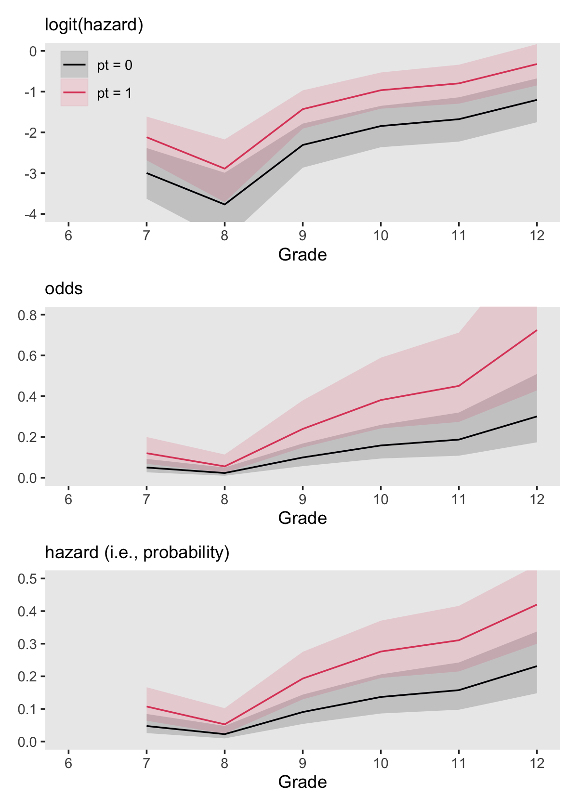
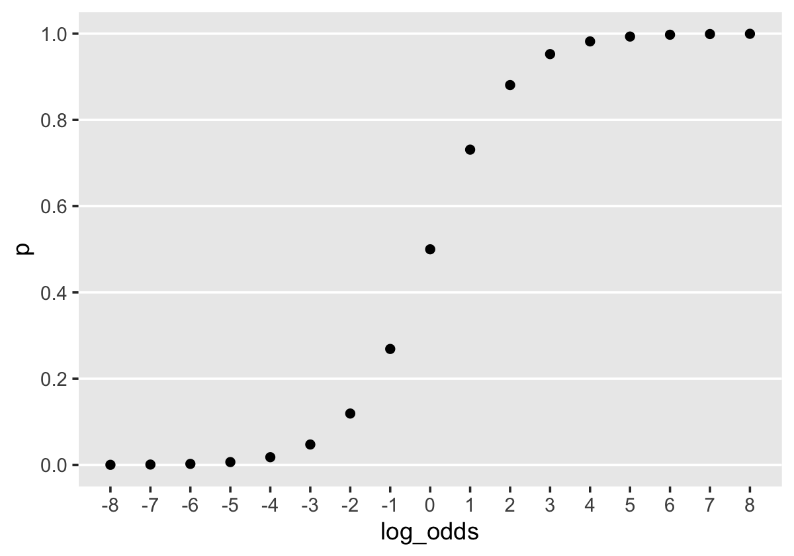
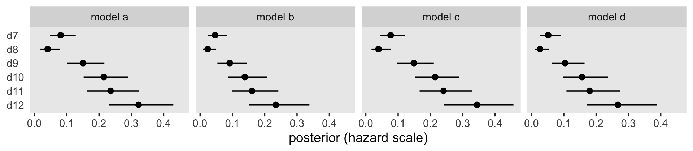
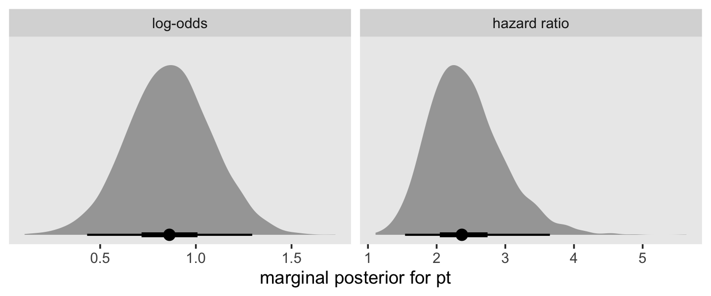
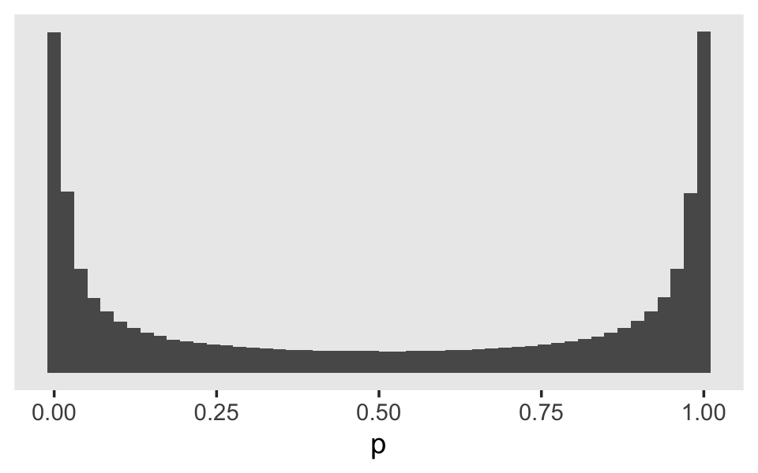
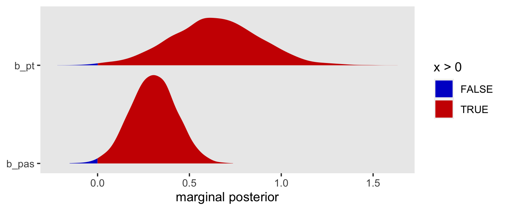

11 Fitting Basic Discrete-Time Hazard Models
In this chapter and the next, we present statistical models of hazard for data collected in discrete time. The relative simplicity of these models makes them an ideal entrée into the world of survival analysis. In subsequent chapters, we extend these basic ideas to situations in which event occurrence is recorded in continuous time.
Good data analysis involves more than using a computer package to fit a statistical model to data. To conduce a credible discrete-time survival analysis, you must: (1) specify a suitable model for hazard and understand its assumptions; (2) use sample data to estimate the model parameters; (3) interpret results in terms of your research questions; (4) evaluate model fit and [express the uncertainty in the] model parameters; and (5) communicate your findings. (Singer & Willett, 2003, pp. 357–358)
11.1 Toward a statistical model for discrete-time hazard
Time to load Capaldi, Crosby, and Stoolmiller’s (1996) firstsex.csv data.
library(tidyverse)
sex <- read_csv("data/firstsex.csv")
glimpse(sex)## Rows: 180
## Columns: 5
## $ id <dbl> 1, 2, 3, 5, 6, 7, 9, 10, 11, 12, 13, 14, 15, 16, 17, 18, 19, 20, 21, 22, 23, 24, 25, 26, 28, …
## $ time <dbl> 9, 12, 12, 12, 11, 9, 12, 11, 12, 11, 12, 11, 9, 12, 10, 12, 7, 12, 10, 12, 11, 12, 11, 12, 1…
## $ censor <dbl> 0, 1, 1, 0, 0, 0, 1, 0, 1, 0, 1, 0, 0, 0, 0, 0, 0, 1, 0, 0, 0, 1, 0, 1, 0, 1, 0, 0, 0, 0, 0, …
## $ pt <dbl> 0, 1, 0, 1, 0, 1, 0, 0, 1, 1, 0, 1, 1, 1, 1, 1, 0, 0, 1, 1, 1, 0, 0, 0, 1, 1, 1, 0, 1, 1, 0, …
## $ pas <dbl> 1.9788670, -0.5454916, -1.4049800, 0.9741806, -0.6356313, -0.2428857, -0.8685001, 0.4535947, …Here are the cases broken down by time and censor status.
sex %>%
count(time, censor)## # A tibble: 7 × 3
## time censor n
## <dbl> <dbl> <int>
## 1 7 0 15
## 2 8 0 7
## 3 9 0 24
## 4 10 0 29
## 5 11 0 25
## 6 12 0 26
## 7 12 1 54Since these data show no censoring before the final time point, it is straightforward to follow along with the text (p. 358) and compute the percent who had already had sex by the 12th grade.
sex %>%
count(censor) %>%
mutate(percent = 100 * (n / sum(n)))## # A tibble: 2 × 3
## censor n percent
## <dbl> <int> <dbl>
## 1 0 126 70
## 2 1 54 30Here we break the data down by our central predictor, pt, which is coded “0 for boys who lived with both biological parents” and “1 for boys who experienced one or more parenting transitions” before the 7th grade.
sex %>%
count(pt) %>%
mutate(percent = 100 * (n / sum(n)))## # A tibble: 2 × 3
## pt n percent
## <dbl> <int> <dbl>
## 1 0 72 40
## 2 1 108 6011.1.1 Plots of within-group hazard functions and survivor functions.
Plots of sample hazard functions and survivor functions estimates separately for groups distinguished by their predictor values are invaluable exploratory tools. If a predictor is categorical, like PT, construction of these displays is straightforward. If a predictor is continuous, you should just temporarily categorize its values for plotting purposes. (pp. 358–359, emphasis in the original)
To make our version of the descriptive plots in Figure 11.1, we’ll need to first load the survival package.
library(survival)fit11.1 will be of the cases for which pt == 0 and fit11.2 will be of the cases for which pt == 1. With fit11.3, we use all cases regardless of pt status.
fit11.1 <-
survfit(data = sex %>% filter(pt == 0),
Surv(time, 1 - censor) ~ 1)
fit11.2 <-
survfit(data = sex %>% filter(pt == 1),
Surv(time, 1 - censor) ~ 1)
fit11.3 <-
survfit(data = sex,
Surv(time, 1 - censor) ~ 1)Before we plot the results, it might be handy to arrange the fit results in life tables. We can streamline that code with the custom make_lt() function from last chapter.
make_lt <- function(fit) {
# arrange the lt data for all rows but the first
most_rows <-
tibble(time = fit$time) %>%
mutate(time_int = str_c("[", time, ", ", time + 1, ")"),
n_risk = fit$n.risk,
n_event = fit$n.event) %>%
mutate(n_censored = n_risk - n_event - lead(n_risk, default = 0),
hazard_fun = n_event / n_risk,
survivor_fun = fit$surv)
# define the values for t = 2 and t = 1
time_1 <- fit$time[1]
time_0 <- time_1 - 1
# define the values for the row for which t = 1
row_1 <-
tibble(time = time_0,
time_int = str_c("[", time_0, ", ", time_1, ")"),
n_risk = fit$n.risk[1],
n_event = NA,
n_censored = NA,
hazard_fun = NA,
survivor_fun = 1)
# make the full life table
lt <-
bind_rows(row_1,
most_rows)
lt
}We’ll use make_lt() separately for each fit, stack the results from the first on top of those from the second, and add a pt column to index the rows. This will be our version of Table 11.1 (p. 360).
lt <-
bind_rows(make_lt(fit11.1),
make_lt(fit11.2),
make_lt(fit11.3)) %>%
mutate(pt = factor(rep(c("pt = 0", "pt = 1", "overall"), each = n() / 3))) %>%
select(pt, everything())
lt## # A tibble: 21 × 8
## pt time time_int n_risk n_event n_censored hazard_fun survivor_fun
## <fct> <dbl> <chr> <dbl> <dbl> <dbl> <dbl> <dbl>
## 1 pt = 0 6 [6, 7) 72 NA NA NA 1
## 2 pt = 0 7 [7, 8) 72 2 0 0.0278 0.972
## 3 pt = 0 8 [8, 9) 70 2 0 0.0286 0.944
## 4 pt = 0 9 [9, 10) 68 8 0 0.118 0.833
## 5 pt = 0 10 [10, 11) 60 8 0 0.133 0.722
## 6 pt = 0 11 [11, 12) 52 10 0 0.192 0.583
## 7 pt = 0 12 [12, 13) 42 8 34 0.190 0.472
## 8 pt = 1 6 [6, 7) 108 NA NA NA 1
## 9 pt = 1 7 [7, 8) 108 13 0 0.120 0.880
## 10 pt = 1 8 [8, 9) 95 5 0 0.0526 0.833
## # ℹ 11 more rowsHere is the code for the top panel of Figure 11.1.
p1 <-
lt %>%
filter(pt != "overall") %>%
ggplot(aes(x = time, y = hazard_fun, color = pt, group = pt)) +
geom_line() +
scale_color_viridis_d(NULL, option = "A", end = .5) +
scale_x_continuous("grade", breaks = 6:12, limits = c(6, 12)) +
scale_y_continuous("estimated hazard probability",
limits = c(0, .5)) +
theme(panel.grid = element_blank())Now make the plot for the bottom panel.
p2 <-
lt %>%
filter(pt != "overall") %>%
ggplot(aes(x = time, y = survivor_fun, color = pt, group = pt)) +
geom_hline(yintercept = .5, color = "white", linetype = 2) +
geom_line() +
scale_color_viridis_d(NULL, option = "A", end = .5) +
scale_x_continuous("grade", breaks = 6:12, limits = c(6, 12)) +
scale_y_continuous("estimated survival probability",
breaks = c(0, .5, 1), limits = c(0, 1)) +
theme(panel.grid = element_blank())Combine the two ggplot2 objects with patchwork syntax to make our version of Figure 11.1.
library(patchwork)
(p1 / p2) +
plot_layout(guides = "collect")
On page 361, Singer and Willett compared the hazard probabilities at grades 8 and 11 for boys in the two pt groups. We can make that comparison with filter().
lt %>%
filter(time %in% c(8, 11) &
pt != "overall") %>%
select(pt:time, hazard_fun)## # A tibble: 4 × 3
## pt time hazard_fun
## <fct> <dbl> <dbl>
## 1 pt = 0 8 0.0286
## 2 pt = 0 11 0.192
## 3 pt = 1 8 0.0526
## 4 pt = 1 11 0.283Compare the two groups on the hazard probabilities at grade 9.
lt %>%
filter(time == 9 &
pt != "overall") %>%
select(pt:time, hazard_fun)## # A tibble: 2 × 3
## pt time hazard_fun
## <fct> <dbl> <dbl>
## 1 pt = 0 9 0.118
## 2 pt = 1 9 0.178Now compare them on their hazard probabilities in grade 12.
lt %>%
filter(time == 12 &
pt != "overall") %>%
select(pt:time, hazard_fun)## # A tibble: 2 × 3
## pt time hazard_fun
## <fct> <dbl> <dbl>
## 1 pt = 0 12 0.190
## 2 pt = 1 12 0.474At the top of page 362, Singer and Willett compared the percentages of boys who were virgins at grades 9 and 12, by pt status. Those percentages are straight algebraic transformations of the corresponding survival function values.
lt %>%
filter(time %in% c(9, 12) &
pt != "overall") %>%
select(pt:time, survivor_fun) %>%
mutate(percent_virgins = (100 * survivor_fun) %>% round(digits = 1))## # A tibble: 4 × 4
## pt time survivor_fun percent_virgins
## <fct> <dbl> <dbl> <dbl>
## 1 pt = 0 9 0.833 83.3
## 2 pt = 0 12 0.472 47.2
## 3 pt = 1 9 0.685 68.5
## 4 pt = 1 12 0.185 18.5Now let’s finish off by computing the interpolated median lifetime values for each with our custom make_iml() function.
make_iml <- function(lt) {
# lt is a generic name for a life table of the
# kind we made with our `make_lt()` function
# determine the mth row
lt_m <-
lt %>%
filter(survivor_fun > .5) %>%
slice(n())
# determine the row for m + 1
lt_m1 <-
lt %>%
filter(survivor_fun < .5) %>%
slice(1)
# pull the value for m
m <- pull(lt_m, time)
# pull the two survival function values
stm <- pull(lt_m, survivor_fun)
stm1 <- pull(lt_m1, survivor_fun)
# plug the values into Equation 10.6 (page 338)
iml <- m + ((stm - .5) / (stm - stm1)) * ((m + 1) - m)
iml
}Put make_iml() to work.
make_iml(lt %>% filter(pt == "pt = 0"))## [1] 11.75make_iml(lt %>% filter(pt == "pt = 1"))## [1] 9.95238111.1.2 What kind of statistical model do these graphs suggest?
To postulate a statistical model to represent the relationship between the population discrete-time hazard function and predictors, we must deal with two complications apparent in these displays. One is that any hypothesized model must describe the shape of the entire discrete-time hazard function over time, not just its value in any one period, in much the same way that a multilevel model for change characterizes the shape of entire individual growth trajectories over time. A second complication is that, as a conditional probability, the value of discrete-time hazard must lie between 0 and 1. Any reasonable statistical model for hazard must recognize this constraint, precluding the occurrence of theoretically impossible values. (p. 362, emphasis in the original)
11.1.2.1 The bounded nature of hazard.
A conventional way to handle the bounded nature of probabilities is transform the scale of the data. David R. Cox (1972) recommended either the odds and log-odds (i.e., logit) transformations. Given a probability, \(p\), we compute the odds as
\[\text{odds} = \frac{p}{1 - p}.\]
Log-odds is a minor extension; you simply take the log of the odds, which we can formally express as
\[\text{log-odds} = \log \left (\frac{p}{1 - p} \right ).\]
To make the conversions easy, we’ll define2 a couple convenience functions: odds() and log_odds().
odds <- function(p) {
p / (1 - p)
}
log_odds <- function(p) {
log(p / (1 - p))
}Here’s how they work.
tibble(p = seq(from = 0, to = 1, by = .1)) %>%
mutate(odds = odds(p),
log_odds = log_odds(p))## # A tibble: 11 × 3
## p odds log_odds
## <dbl> <dbl> <dbl>
## 1 0 0 -Inf
## 2 0.1 0.111 -2.20
## 3 0.2 0.25 -1.39
## 4 0.3 0.429 -0.847
## 5 0.4 0.667 -0.405
## 6 0.5 1 0
## 7 0.6 1.5 0.405
## 8 0.7 2.33 0.847
## 9 0.8 4 1.39
## 10 0.9 9 2.20
## 11 1 Inf InfBefore we make our version of Figure 11.2, it might be instructive to see how odds and log-odds compare to probabilities in a plot. Here we’ll compare them to probabilities ranging from .01 to .99.
tibble(p = seq(from = .01, to = .99, by = .01)) %>%
mutate(odds = odds(p),
`log(odds)` = log_odds(p)) %>%
pivot_longer(-p) %>%
mutate(name = factor(name,
levels = c("odds", "log(odds)"))) %>%
ggplot(aes(x = p, y = value)) +
geom_line() +
labs(x = "probability",
y = "transformed scale") +
theme(panel.grid = element_blank()) +
facet_wrap(~ name, scales = "free")
Odds are bounded to values of zero and above and have an inflection at 1. Log-odds are unbounded and have an inflection point at 0. Here we’ll save the odds and log-odds for our hazard functions within the lt life table.
lt <-
lt %>%
mutate(odds = odds(hazard_fun),
log_odds = log_odds(hazard_fun))
lt## # A tibble: 21 × 10
## pt time time_int n_risk n_event n_censored hazard_fun survivor_fun odds log_odds
## <fct> <dbl> <chr> <dbl> <dbl> <dbl> <dbl> <dbl> <dbl> <dbl>
## 1 pt = 0 6 [6, 7) 72 NA NA NA 1 NA NA
## 2 pt = 0 7 [7, 8) 72 2 0 0.0278 0.972 0.0286 -3.56
## 3 pt = 0 8 [8, 9) 70 2 0 0.0286 0.944 0.0294 -3.53
## 4 pt = 0 9 [9, 10) 68 8 0 0.118 0.833 0.133 -2.01
## 5 pt = 0 10 [10, 11) 60 8 0 0.133 0.722 0.154 -1.87
## 6 pt = 0 11 [11, 12) 52 10 0 0.192 0.583 0.238 -1.44
## 7 pt = 0 12 [12, 13) 42 8 34 0.190 0.472 0.235 -1.45
## 8 pt = 1 6 [6, 7) 108 NA NA NA 1 NA NA
## 9 pt = 1 7 [7, 8) 108 13 0 0.120 0.880 0.137 -1.99
## 10 pt = 1 8 [8, 9) 95 5 0 0.0526 0.833 0.0556 -2.89
## # ℹ 11 more rowsWe’re ready to make and combine the subplots for our version of Figure 11.2.
# hazard
p1 <-
lt %>%
filter(pt != "overall") %>%
ggplot(aes(x = time, y = hazard_fun, color = pt, group = pt)) +
geom_line() +
scale_y_continuous(NULL, breaks = c(0, .5, 1), limits = c(0, 1)) +
labs(subtitle = "Estimated hazard") +
theme(legend.background = element_rect(fill = "transparent"),
legend.key = element_rect(color = "grey92"),
legend.position = c(.1, .825))
# odds
p2 <-
lt %>%
filter(pt != "overall") %>%
ggplot(aes(x = time, y = odds, color = pt, group = pt)) +
geom_line() +
scale_y_continuous(NULL, breaks = c(0, .5, 1), limits = c(0, 1)) +
labs(subtitle = "Estimated odds") +
theme(legend.position = "none")
# log-odds
p3 <-
lt %>%
filter(pt != "overall") %>%
ggplot(aes(x = time, y = log_odds, color = pt, group = pt)) +
geom_line() +
scale_y_continuous(NULL, limits = c(-4, 0)) +
labs(subtitle = "Estimated logit(hazard)") +
theme(legend.position = "none")
(p1 / p2 / p3 ) &
scale_color_viridis_d(NULL, option = "A", end = .5) &
scale_x_continuous("grade", breaks = 6:12, limits = c(6, 12)) &
theme(panel.grid = element_blank())11.1.2.2 What statistical model could have generated these sample data?
With the survival models from the prior sections, we were lazy and just used the survival package. But recall from the end of the last chapter that we can fit the analogous models brms using the binomial likelihood. This subsection is a great place to practice those some more. The fitted lines Singer and Willett displayed in Figure 11.3 can all be reproduced with binomial regression. However, the sex data are not in a convenient form to fit those models. Just like we did in last chapter, we’ll want to take a two-step process whereby we first convert the data to the long (i.e., person-period) format and then summarize. Happily, we can accomplish that first step by uploading the data in the firstsex_pp.csv file, which are already in the long format.
sex_pp <- read_csv("data/firstsex_pp.csv")
glimpse(sex_pp)## Rows: 822
## Columns: 11
## $ id <dbl> 1, 1, 1, 2, 2, 2, 2, 2, 2, 3, 3, 3, 3, 3, 3, 5, 5, 5, 5, 5, 5, 6, 6, 6, 6, 6, 7, 7, 7, 9, 9, …
## $ period <dbl> 7, 8, 9, 7, 8, 9, 10, 11, 12, 7, 8, 9, 10, 11, 12, 7, 8, 9, 10, 11, 12, 7, 8, 9, 10, 11, 7, 8…
## $ event <dbl> 0, 0, 1, 0, 0, 0, 0, 0, 0, 0, 0, 0, 0, 0, 0, 0, 0, 0, 0, 0, 1, 0, 0, 0, 0, 1, 0, 0, 1, 0, 0, …
## $ d7 <dbl> 1, 0, 0, 1, 0, 0, 0, 0, 0, 1, 0, 0, 0, 0, 0, 1, 0, 0, 0, 0, 0, 1, 0, 0, 0, 0, 1, 0, 0, 1, 0, …
## $ d8 <dbl> 0, 1, 0, 0, 1, 0, 0, 0, 0, 0, 1, 0, 0, 0, 0, 0, 1, 0, 0, 0, 0, 0, 1, 0, 0, 0, 0, 1, 0, 0, 1, …
## $ d9 <dbl> 0, 0, 1, 0, 0, 1, 0, 0, 0, 0, 0, 1, 0, 0, 0, 0, 0, 1, 0, 0, 0, 0, 0, 1, 0, 0, 0, 0, 1, 0, 0, …
## $ d10 <dbl> 0, 0, 0, 0, 0, 0, 1, 0, 0, 0, 0, 0, 1, 0, 0, 0, 0, 0, 1, 0, 0, 0, 0, 0, 1, 0, 0, 0, 0, 0, 0, …
## $ d11 <dbl> 0, 0, 0, 0, 0, 0, 0, 1, 0, 0, 0, 0, 0, 1, 0, 0, 0, 0, 0, 1, 0, 0, 0, 0, 0, 1, 0, 0, 0, 0, 0, …
## $ d12 <dbl> 0, 0, 0, 0, 0, 0, 0, 0, 1, 0, 0, 0, 0, 0, 1, 0, 0, 0, 0, 0, 1, 0, 0, 0, 0, 0, 0, 0, 0, 0, 0, …
## $ pt <dbl> 0, 0, 0, 1, 1, 1, 1, 1, 1, 0, 0, 0, 0, 0, 0, 1, 1, 1, 1, 1, 1, 0, 0, 0, 0, 0, 1, 1, 1, 0, 0, …
## $ pas <dbl> 1.9788670, 1.9788670, 1.9788670, -0.5454916, -0.5454916, -0.5454916, -0.5454916, -0.5454916, …Now we’ll compute the desired summary values and wrangle a bit.
sex_aggregated <-
sex_pp %>%
mutate(event = if_else(event == 1, "event", "no_event")) %>%
group_by(period) %>%
count(event, pt) %>%
ungroup() %>%
pivot_wider(names_from = event,
values_from = n) %>%
mutate(total = event + no_event,
period_center = period - mean(period),
peroid_factor = factor(period),
pt = factor(pt))
sex_aggregated## # A tibble: 12 × 7
## period pt event no_event total period_center peroid_factor
## <dbl> <fct> <int> <int> <int> <dbl> <fct>
## 1 7 0 2 70 72 -2.5 7
## 2 7 1 13 95 108 -2.5 7
## 3 8 0 2 68 70 -1.5 8
## 4 8 1 5 90 95 -1.5 8
## 5 9 0 8 60 68 -0.5 9
## 6 9 1 16 74 90 -0.5 9
## 7 10 0 8 52 60 0.5 10
## 8 10 1 21 53 74 0.5 10
## 9 11 0 10 42 52 1.5 11
## 10 11 1 15 38 53 1.5 11
## 11 12 0 8 34 42 2.5 12
## 12 12 1 18 20 38 2.5 12Note how we saved the grade values in three columns:
periodhas them as continuous values, which will be hand for plotting;period_centerhas them as mean-centered continuous values, which will make fitting the linear model in the middle panel easier; andperiod_factorhas them saved as a factor, which will help us fit the model in the bottom panel.
Fire up brms.
library(brms)Before we fit the models, it might be good to acknowledge we’re jumping ahead of the authors, a bit. Singer and Willett didn’t discuss fitting discrete time hazard models until section 11.3.2. Sure, their focus was on the frequentist approach using maximum likelihood. But the point still stands. If these model fitting details feel a bit rushed, they are.
Any anxious feelings aside, now fit the three binomial models. We continue to use weakly-regularizing priors for each.
# top panel
fit11.4 <-
brm(data = sex_aggregated,
family = binomial,
event | trials(total) ~ 0 + pt,
prior(normal(0, 4), class = b),
chains = 4, cores = 4, iter = 2000, warmup = 1000,
seed = 11,
file = "fits/fit11.04")
# middle panel
fit11.5 <-
brm(data = sex_aggregated,
family = binomial,
event | trials(total) ~ 0 + pt + period_center,
prior(normal(0, 4), class = b),
chains = 4, cores = 4, iter = 2000, warmup = 1000,
seed = 11,
file = "fits/fit11.05")
# bottom panel
fit11.6 <-
brm(data = sex_aggregated,
family = binomial,
event | trials(total) ~ 0 + pt + peroid_factor,
prior(normal(0, 4), class = b),
chains = 4, cores = 4, iter = 2000, warmup = 1000,
seed = 11,
file = "fits/fit11.06")Check the model summaries.
print(fit11.4)## Family: binomial
## Links: mu = logit
## Formula: event | trials(total) ~ 0 + pt
## Data: sex_aggregated (Number of observations: 12)
## Draws: 4 chains, each with iter = 2000; warmup = 1000; thin = 1;
## total post-warmup draws = 4000
##
## Population-Level Effects:
## Estimate Est.Error l-95% CI u-95% CI Rhat Bulk_ESS Tail_ESS
## pt0 -2.15 0.17 -2.50 -1.83 1.00 3668 2824
## pt1 -1.44 0.12 -1.68 -1.21 1.00 4237 2963
##
## Draws were sampled using sampling(NUTS). For each parameter, Bulk_ESS
## and Tail_ESS are effective sample size measures, and Rhat is the potential
## scale reduction factor on split chains (at convergence, Rhat = 1).print(fit11.5)## Family: binomial
## Links: mu = logit
## Formula: event | trials(total) ~ 0 + pt + period_center
## Data: sex_aggregated (Number of observations: 12)
## Draws: 4 chains, each with iter = 2000; warmup = 1000; thin = 1;
## total post-warmup draws = 4000
##
## Population-Level Effects:
## Estimate Est.Error l-95% CI u-95% CI Rhat Bulk_ESS Tail_ESS
## pt0 -2.23 0.18 -2.60 -1.89 1.00 3779 3003
## pt1 -1.35 0.12 -1.60 -1.12 1.00 3270 2585
## period_center 0.43 0.06 0.31 0.56 1.00 3635 3089
##
## Draws were sampled using sampling(NUTS). For each parameter, Bulk_ESS
## and Tail_ESS are effective sample size measures, and Rhat is the potential
## scale reduction factor on split chains (at convergence, Rhat = 1).print(fit11.6)## Family: binomial
## Links: mu = logit
## Formula: event | trials(total) ~ 0 + pt + peroid_factor
## Data: sex_aggregated (Number of observations: 12)
## Draws: 4 chains, each with iter = 2000; warmup = 1000; thin = 1;
## total post-warmup draws = 4000
##
## Population-Level Effects:
## Estimate Est.Error l-95% CI u-95% CI Rhat Bulk_ESS Tail_ESS
## pt0 -3.00 0.32 -3.63 -2.38 1.00 986 1718
## pt1 -2.12 0.27 -2.68 -1.61 1.00 912 1224
## peroid_factor8 -0.77 0.48 -1.76 0.12 1.00 1442 1993
## peroid_factor9 0.69 0.35 0.03 1.37 1.00 1096 1527
## peroid_factor10 1.15 0.34 0.50 1.83 1.00 1064 1732
## peroid_factor11 1.32 0.36 0.61 2.03 1.00 1142 1581
## peroid_factor12 1.80 0.36 1.11 2.50 1.00 1180 1759
##
## Draws were sampled using sampling(NUTS). For each parameter, Bulk_ESS
## and Tail_ESS are effective sample size measures, and Rhat is the potential
## scale reduction factor on split chains (at convergence, Rhat = 1).We can extract the fitted values and their summaries for each row in the data with fitted(). To get them in the log-odds metric, we need to set scale = "linear". Here’s a quick example with fit11.4.
fitted(fit11.4, scale = "linear")## Estimate Est.Error Q2.5 Q97.5
## [1,] -2.153394 0.1698095 -2.501172 -1.829720
## [2,] -1.440906 0.1215326 -1.682504 -1.210137
## [3,] -2.153394 0.1698095 -2.501172 -1.829720
## [4,] -1.440906 0.1215326 -1.682504 -1.210137
## [5,] -2.153394 0.1698095 -2.501172 -1.829720
## [6,] -1.440906 0.1215326 -1.682504 -1.210137
## [7,] -2.153394 0.1698095 -2.501172 -1.829720
## [8,] -1.440906 0.1215326 -1.682504 -1.210137
## [9,] -2.153394 0.1698095 -2.501172 -1.829720
## [10,] -1.440906 0.1215326 -1.682504 -1.210137
## [11,] -2.153394 0.1698095 -2.501172 -1.829720
## [12,] -1.440906 0.1215326 -1.682504 -1.210137If we convert that output to a data frame, tack on the original data values, and wrangle a bit, we’ll be in good shape to make the top panel of Figure 11.3. Below we’ll do that for each of the three panels, saving them as p1, p2, and p3.
# logit(hazard) is horizontal with time
p1 <-
fitted(fit11.4,
scale = "linear") %>%
data.frame() %>%
bind_cols(sex_aggregated) %>%
mutate(pt = str_c("pt = ", pt)) %>%
ggplot(aes(x = period, group = pt,
fill = pt, color = pt)) +
geom_ribbon(aes(ymin = Q2.5, ymax = Q97.5),
linewidth = 0, alpha = 1/4) +
geom_line(aes(y = Estimate),
alpha = 1/2) +
geom_point(aes(y = log_odds(event / total))) +
scale_y_continuous(NULL, limits = c(-4, 0)) +
labs(subtitle = "logit(hazard) is horizontal with time") +
theme(legend.background = element_rect(fill = "transparent"),
legend.key = element_rect(color = "grey92"),
legend.position = c(.1, .825))
# logit(hazard) is linear with time
p2 <-
fitted(fit11.5,
scale = "linear") %>%
data.frame() %>%
bind_cols(sex_aggregated) %>%
ggplot(aes(x = period, group = pt,
fill = pt, color = pt)) +
geom_ribbon(aes(ymin = Q2.5, ymax = Q97.5),
linewidth = 0, alpha = 1/4) +
geom_line(aes(y = Estimate),
alpha = 1/2) +
geom_point(aes(y = log_odds(event / total))) +
labs(subtitle = "logit(hazard) is linear with time",
y = "logit(hazard)") +
coord_cartesian(ylim = c(-4, 0)) +
theme(legend.position = "none")
# logit(hazard) is completely general with time
p3 <-
fitted(fit11.6,
scale = "linear") %>%
data.frame() %>%
bind_cols(sex_aggregated) %>%
ggplot(aes(x = period, group = pt,
fill = pt, color = pt)) +
geom_ribbon(aes(ymin = Q2.5, ymax = Q97.5),
linewidth = 0, alpha = 1/4) +
geom_line(aes(y = Estimate),
alpha = 1/2) +
geom_point(aes(y = log_odds(event / total))) +
labs(subtitle = "logit(hazard) is completely general with time",
y = NULL) +
coord_cartesian(ylim = c(-4, 0)) +
theme(legend.position = "none")Now combine the plots with patchwork syntax.
(p1 / p2 / p3) &
scale_fill_viridis_d(NULL, option = "A", end = .6) &
scale_color_viridis_d(NULL, option = "A", end = .6) &
scale_x_continuous("Grade", breaks = 6:12, limits = c(6, 12)) &
theme(panel.grid = element_blank())
In addition to the posterior means (i.e., our analogues to the fitted values in the text), we added the 95% Bayesian intervals to give a better sense of the uncertainty in each model. Singer and Willett mused the unconstrained model (fit6) was a better fit to the data than the other two. We can quantify that with a LOO comparison.
fit11.4 <- add_criterion(fit11.4, "loo")
fit11.5 <- add_criterion(fit11.5, "loo")
fit11.6 <- add_criterion(fit11.6, "loo")
loo_compare(fit11.4, fit11.5, fit11.6) %>% print(simplify = F)## elpd_diff se_diff elpd_loo se_elpd_loo p_loo se_p_loo looic se_looic
## fit11.6 0.0 0.0 -31.6 1.7 5.1 0.7 63.1 3.5
## fit11.5 -0.7 3.2 -32.2 3.2 3.5 1.2 64.5 6.4
## fit11.4 -27.7 10.5 -59.3 10.4 9.3 2.6 118.6 20.7Here are the LOO weights.
model_weights(fit11.4, fit11.5, fit11.6, weights = "loo") %>% round(digits = 3)## fit11.4 fit11.5 fit11.6
## 0.000 0.338 0.66211.2 Formal representation of the population discrete-time hazard model
Earlier equations for the hazard function omitted substantive predictors. Now consider the case where \(X_{1ij}, X_{2ij}, \dots , X_{Pij}\) stand for the \(P\) predictors which may or may not vary across individuals \(i\) and time periods \(j\). Thus \(x_{pij}\) is the value for the \(i^\text{th}\) individual on the \(p^\text{th}\) variable during the \(j^\text{th}\) period. We can use this to define the conditional hazard function as
\[h(t_{ij}) = \Pr [T_i = j \mid T \geq j \text{ and } X_{1ij} = x_{1ij}, X_{2ij} = x_{2ij}, \dots , X_{Pij} = x_{pij}].\]
Building further and keeping the baseline shape of the discrete hazard function flexible, we want a method that allows each of the \(j\) time periods to have its own value. Imagine a set of \(J\) dummy variables, \(D_1, D_2, \dots, D_J\), marking off each of the time periods. For example, say \(J = 6\), we could depict this in a tibble like so.
tibble(period = 1:6) %>%
mutate(d1 = if_else(period == 1, 1, 0),
d2 = if_else(period == 2, 1, 0),
d3 = if_else(period == 3, 1, 0),
d4 = if_else(period == 4, 1, 0),
d5 = if_else(period == 5, 1, 0),
d6 = if_else(period == 6, 1, 0))## # A tibble: 6 × 7
## period d1 d2 d3 d4 d5 d6
## <int> <dbl> <dbl> <dbl> <dbl> <dbl> <dbl>
## 1 1 1 0 0 0 0 0
## 2 2 0 1 0 0 0 0
## 3 3 0 0 1 0 0 0
## 4 4 0 0 0 1 0 0
## 5 5 0 0 0 0 1 0
## 6 6 0 0 0 0 0 1If we were to use a set of dummies of this kind in a model, we would omit the conventional regression intercept, replacing it with the \(J\) dummies. Now presume we’re fitting a hazard model using the logit link, \(\operatorname{logit} h(t_{ij})\). We can express the discrete conditional hazard model with a general functional form with respect to time as
\[\operatorname{logit} h(t_{ij}) = [\alpha_1 D_{1ij} + \alpha_2 D_{2ij} + \cdots + \alpha_J D_{Jij}] + [\beta_1 X_{1ij} + \beta_2 X_{2ij} + \cdots + \beta_P X_{Pij}],\]
where the \(\alpha\) parameters are the \(J\) time-period dummies and the \(\beta\) parameters are for other time-varying or time-invariant predictors. This is just the type of model we used to fit fit116. For that model, the basic equation was
\[\operatorname{logit} h(t_{ij}) = [\alpha_7 D_{7ij} + \alpha_8 D_{8ij} + \cdots + \alpha_{12} D_{12ij}] + [\beta_1 \text{PT}_i ],\]
where the only substantive predictor was the time-invariant pt. However, that formula could be a little misleading. Recall the formula:
fit11.6$formula## event | trials(total) ~ 0 + pt + peroid_factorWe suppressed the default regression intercept with the ~ 0 + syntax and the only two predictors were pt and peroid_factor. Both were saved as factor variables. Functionally, that’s why period_factor worked as \(\alpha_7 D_{7ij} + \alpha_8 D_{8ij} + \cdots + \alpha_{12} D_{12ij}\), a series of 5 dummy variables with no reference category. The same basic thing goes for pt. Because pt was a factor used in a model formula with no conventional intercept, it acted as if it was a series of 2 dummy variables with no reference category. Thus, we might rewrite the model equation for fit6 as
\[\operatorname{logit} h(t_{ij}) = [\alpha_7 D_{7ij} + \alpha_8 D_{8ij} + \cdots + \alpha_{12} D_{12ij}] + [\beta_0 \text{PT}_{0i} + \beta_1 \text{PT}_{1i} ].\]
And since we’re practicing fitting these models as Bayesians, the fit6 equation with a fuller expression of the likelihood and the priors looks like
\[ \begin{align*} \text{event}_{ij} & = \operatorname{Binomial}(n = \text{trials}_{ij}, p_{ij}) \\ \operatorname{logit} (p_{ij}) & = [\alpha_7 D_{7ij} + \alpha_8 D_{8ij} + \cdots + \alpha_{12} D_{12ij}] + [\beta_0 \text{PT}_{0i} + \beta_1 \text{PT}_{1i} ] \\ \alpha_7, \alpha_8, \dots, \alpha_{12} & \sim \operatorname{Normal}(0, 4) \\ \beta_0 \text{ and } \beta_1 & \sim \operatorname{Normal}(0, 4), \end{align*} \]
where we’re describing the model in terms of the criterion, event, rather than in terms of \(h(t_{ij})\). And what is the criterion, event? It’s a vector of counts. The binomial likelihood allows us to model vectors of counts in terms of the number of trials, as indexed by our trials vector, and the (conditional) probability of a “1” in a given trial. In this context, \(h(t_{ij}) = p_{ij}\).
11.2.1 What do the parameters represent?
Given our factor coding of pt, our two submodels for the equations in the last section are
\[ \begin{align*} \text{when PT = 0: } \operatorname{logit} h(t_j) & = [\alpha_7 D_7 + \alpha_8 D_8 + \cdots + \alpha_{12} D_{12}] + \beta_0 \\ \text{when PT = 1: } \operatorname{logit} h(t_j) & = [\alpha_7 D_7 + \alpha_8 D_8 + \cdots + \alpha_{12} D_{12}] + \beta_1, \end{align*} \]
where we used Singer and Willett’s simplified notation and dropped all the \(i\) subscripts and most of the \(j\) subscripts.
11.2.2 An alternative representation of the model.
In the previous sections, we expressed the model in terms of the logit of the criterion or the \(p\) parameter of the likelihood. Another strategy is the express the criterion (or \(p\)) in its natural metric and put the nonlinear portion on the right side of the equation. If we consider the generic discrete conditional hazard function, that would follow the form
\[ h(t_{ij}) = \frac{1}{1 + e^{-([\alpha_1 D_{1ij} + \alpha_2 D_{2ij} + \cdots + \alpha_J D_{Jij}] + [\beta_1 X_{1ij} + \beta_2 X_{2ij} + \cdots + \beta_P X_{Pij}])}}. \]
This is just a particular kind of logistic regression model. It also clarifies that “by specifying a linear relationship between predictors and logit hazard we imply a nonlinear relationship between predictors and raw hazard” (p. 377, emphasis in the original). We can explore what that might look like with our version of Figure 11.4. Here we continue to use fit6, but this time we’ll save the output from fitted() before plotting.
f <-
fitted(fit11.6,
scale = "linear") %>%
data.frame() %>%
bind_cols(sex_aggregated)
f## Estimate Est.Error Q2.5 Q97.5 period pt event no_event total period_center peroid_factor
## 1 -2.9970126 0.3176158 -3.6294093 -2.3832815 7 0 2 70 72 -2.5 7
## 2 -2.1180003 0.2735893 -2.6848898 -1.6111410 7 1 13 95 108 -2.5 7
## 3 -3.7684632 0.4287806 -4.6415348 -2.9903587 8 0 2 68 70 -1.5 8
## 4 -2.8894508 0.3951568 -3.7108161 -2.1724589 8 1 5 90 95 -1.5 8
## 5 -2.3082801 0.2743845 -2.8655483 -1.7835310 9 0 8 60 68 -0.5 9
## 6 -1.4292677 0.2334189 -1.9071366 -0.9685727 9 1 16 74 90 -0.5 9
## 7 -1.8435758 0.2576237 -2.3635566 -1.3492209 10 0 8 52 60 0.5 10
## 8 -0.9645635 0.2215530 -1.4188340 -0.5291742 10 1 21 53 74 0.5 10
## 9 -1.6761430 0.2710102 -2.2258520 -1.1397280 11 0 10 42 52 1.5 11
## 10 -0.7971307 0.2476662 -1.2959928 -0.3393064 11 1 15 38 53 1.5 11
## 11 -1.2014513 0.2681393 -1.7501715 -0.6750968 12 0 8 34 42 2.5 12
## 12 -0.3224389 0.2584378 -0.8478826 0.1663958 12 1 18 20 38 2.5 12Make the subplots.
# logit(hazard)
p1 <-
f %>%
mutate(pt = str_c("pt = ", pt)) %>%
ggplot(aes(x = period, group = pt,
fill = pt, color = pt)) +
geom_ribbon(aes(ymin = Q2.5, ymax = Q97.5),
linewidth = 0, alpha = 1/6) +
geom_line(aes(y = Estimate)) +
labs(subtitle = "logit(hazard)",
y = NULL) +
coord_cartesian(ylim = c(-4, 0)) +
theme(legend.background = element_rect(fill = "transparent"),
legend.key = element_rect(color = "grey92"),
legend.position = c(.1, .825))
# odds
p2 <-
f %>%
mutate_at(vars(Estimate, Q2.5, Q97.5), .funs = exp) %>%
ggplot(aes(x = period, group = pt,
fill = pt, color = pt)) +
geom_ribbon(aes(ymin = Q2.5, ymax = Q97.5),
linewidth = 0, alpha = 1/6) +
geom_line(aes(y = Estimate)) +
labs(subtitle = "odds",
y = NULL) +
coord_cartesian(ylim = c(0, .8)) +
theme(legend.position = "none")
# hazard
p3 <-
f %>%
mutate_at(vars(Estimate, Q2.5, Q97.5), .funs = inv_logit_scaled) %>%
ggplot(aes(x = period, group = pt,
fill = pt, color = pt)) +
geom_ribbon(aes(ymin = Q2.5, ymax = Q97.5),
linewidth = 0, alpha = 1/6) +
geom_line(aes(y = Estimate)) +
labs(subtitle = "hazard (i.e., probability)",
y = NULL) +
coord_cartesian(ylim = c(0, .5)) +
theme(legend.position = "none")Combine the subplots with patchwork.
(p1 / p2 / p3) &
scale_fill_viridis_d(NULL, option = "A", end = .6) &
scale_color_viridis_d(NULL, option = "A", end = .6) &
scale_x_continuous("Grade", breaks = 6:12, limits = c(6, 12)) &
theme(panel.grid = element_blank())
The mutate_at() conversions we made for p2 and p3 were based on the guidelines in Table 11.2. Those were:
tibble(`original scale` = c("logit", "odds", "logit"),
`desired scale` = c("odds", "probability", "probability"),
transformation = c("exp(logit)", "odds / (1 + odds)", "1 / (1 + exp(-1 * logit))")) %>%
flextable::flextable() %>%
flextable::width(width = c(1.5, 1.5, 2))original scale | desired scale | transformation |
|---|---|---|
logit | odds | exp(logit) |
odds | probability | odds / (1 + odds) |
logit | probability | 1 / (1 + exp(-1 * logit)) |
We accomplished the transformation in the bottom row with the brms::inv_logit_scaled() function.
11.3 Fitting a discrete-time hazard model to data
As Singer and Willett wrote, “with data collected on a random sample of individuals from a target population, you can easily fit a discrete-time hazard model, estimate its parameters using maximum likelihood methods, and evaluate goodness-of-fit” (pp. 378–379. As we’ve already demonstrated, you can fit them with Bayesian software, too. Though we’ll be focusing on brms, you might also want to check out the rstanarm package, about which you can learn more from Brilleman, Elci, Novik, and Wolfe’s (2020) preprint, Bayesian survival analysis Using the rstanarm R package, Brilleman’s (2019) vignette, Estimating survival (time-to-event) models with rstanarm, and the Survival models in rstanarm thread in the Stan forums.
11.3.1 Adding predictors to the person-period data set.
At the beginning of section 11.1.2.2, we already loaded a version of the person-period data including the discrete-time dummies. It has our substantive predictors pt and pas, too. We saved it as sex_pp. Here’s a glimpse().
sex_pp %>%
glimpse()## Rows: 822
## Columns: 11
## $ id <dbl> 1, 1, 1, 2, 2, 2, 2, 2, 2, 3, 3, 3, 3, 3, 3, 5, 5, 5, 5, 5, 5, 6, 6, 6, 6, 6, 7, 7, 7, 9, 9, …
## $ period <dbl> 7, 8, 9, 7, 8, 9, 10, 11, 12, 7, 8, 9, 10, 11, 12, 7, 8, 9, 10, 11, 12, 7, 8, 9, 10, 11, 7, 8…
## $ event <dbl> 0, 0, 1, 0, 0, 0, 0, 0, 0, 0, 0, 0, 0, 0, 0, 0, 0, 0, 0, 0, 1, 0, 0, 0, 0, 1, 0, 0, 1, 0, 0, …
## $ d7 <dbl> 1, 0, 0, 1, 0, 0, 0, 0, 0, 1, 0, 0, 0, 0, 0, 1, 0, 0, 0, 0, 0, 1, 0, 0, 0, 0, 1, 0, 0, 1, 0, …
## $ d8 <dbl> 0, 1, 0, 0, 1, 0, 0, 0, 0, 0, 1, 0, 0, 0, 0, 0, 1, 0, 0, 0, 0, 0, 1, 0, 0, 0, 0, 1, 0, 0, 1, …
## $ d9 <dbl> 0, 0, 1, 0, 0, 1, 0, 0, 0, 0, 0, 1, 0, 0, 0, 0, 0, 1, 0, 0, 0, 0, 0, 1, 0, 0, 0, 0, 1, 0, 0, …
## $ d10 <dbl> 0, 0, 0, 0, 0, 0, 1, 0, 0, 0, 0, 0, 1, 0, 0, 0, 0, 0, 1, 0, 0, 0, 0, 0, 1, 0, 0, 0, 0, 0, 0, …
## $ d11 <dbl> 0, 0, 0, 0, 0, 0, 0, 1, 0, 0, 0, 0, 0, 1, 0, 0, 0, 0, 0, 1, 0, 0, 0, 0, 0, 1, 0, 0, 0, 0, 0, …
## $ d12 <dbl> 0, 0, 0, 0, 0, 0, 0, 0, 1, 0, 0, 0, 0, 0, 1, 0, 0, 0, 0, 0, 1, 0, 0, 0, 0, 0, 0, 0, 0, 0, 0, …
## $ pt <dbl> 0, 0, 0, 1, 1, 1, 1, 1, 1, 0, 0, 0, 0, 0, 0, 1, 1, 1, 1, 1, 1, 0, 0, 0, 0, 0, 1, 1, 1, 0, 0, …
## $ pas <dbl> 1.9788670, 1.9788670, 1.9788670, -0.5454916, -0.5454916, -0.5454916, -0.5454916, -0.5454916, …11.3.2 Maximum likelihood estimates [and Bayesian posteriors] for the discrete-time hazard model.
We’re not going to walk through all the foundational equations for the likelihood and log-likelihood functions (Equations 11.11 through 11.13). For our purposes, just note that “it turns out that the standard logistic regression routines widely available in all major statistical packages, when applied appropriately in the person-period data set, actually provide estimates of the parameters of the discrete-time hazard model” (p. 383, emphasis in the original). Happily, this is what we’ve been doing. Bayesian logistic regression via the binomial likelihood has been our approach. And since we’re Bayesians, the same caveat applies to survival models as applied to the other longitudinal models we fit in earlier chapters. We’re not just maximizing likelihoods, here. Bayes’s formula requires us to multiply the likelihood by the prior.
\[ \\underbrace{p(\theta \mid d)}_\text{posterior} \propto \underbrace{p(d \mid \theta)}_\text{likelihood} \; \underbrace{p(\theta)}_\text{prior} \]
11.3.3 Fitting the discrete-time hazard model to data.
In one sense, fitting discrete-hazard models with Bayesian logistic regression is old hat, for us. We’ve been doing that since the end of last chapter. But one thing I haven’t clarified is, up to this point, we have been using the aggregated binomial format. To show what I mean, we might look at the data we used for our last model, fit11.6.
sex_aggregated## # A tibble: 12 × 7
## period pt event no_event total period_center peroid_factor
## <dbl> <fct> <int> <int> <int> <dbl> <fct>
## 1 7 0 2 70 72 -2.5 7
## 2 7 1 13 95 108 -2.5 7
## 3 8 0 2 68 70 -1.5 8
## 4 8 1 5 90 95 -1.5 8
## 5 9 0 8 60 68 -0.5 9
## 6 9 1 16 74 90 -0.5 9
## 7 10 0 8 52 60 0.5 10
## 8 10 1 21 53 74 0.5 10
## 9 11 0 10 42 52 1.5 11
## 10 11 1 15 38 53 1.5 11
## 11 12 0 8 34 42 2.5 12
## 12 12 1 18 20 38 2.5 12Now recall the formula for the binomial likelihood from the end of last chapter:
\[\Pr (z \mid n, p) = \frac{n!}{z!(n - z)!} p^z (1 - p)^{n - z},\]
where \(z\) is the number of cases for which the value is 1, \(n\) is the total number of cases, and \(p\) is the constant chance of a 1 across cases. We refer to binomial data as aggregated with \(n > 1\). Our \(n\) vector in the sex_aggregated, total, ranged from 38 to 108. Accordingly, our \(z\) vector, event, was always some value equal or lower to that in the same row for total.
The person-period data, sex_pp, contain the same information but in a different format. Instead, each event cell only takes on a value of 0 or 1 (i.e., \(n = 1\)). If you were to sum up all the values in the total column of the sex_aggregated data, you’d return 822.
sex_aggregated %>%
summarise(sum = sum(total))## # A tibble: 1 × 1
## sum
## <int>
## 1 822This is also the total number of rows in the sex_pp data.
sex_pp %>%
count()## # A tibble: 1 × 1
## n
## <int>
## 1 822It’s also the case that when \(n = 1\), the right side of the equation for the binomial function reduces to
\[p^z (1 - p)^{1 - z}.\]
Whether you are working with aggregated or un-aggregated data, both are suited to fit logistic regression models with the binomial likelihood. Just specify the necessary information in the model syntax. For brms, the primary difference is how you use the trials() function. When we fit our logistic regression models using the aggregated data, we specified trials(total), which informed the brm() function what the \(n\) values were. In the case of unaggregated binomial data, we can just state trials(1). Each cell is the outcome \(z\) for a single trial.
Before we fit the models, we might talk a bit about priors. When we fit the first model of this kind at the end of Chapter 10, we just used prior(normal(0, 4), class = b) without comment. Recall we’re modeling probabilities in the log-odds space. In Section 11.1.2.1 we used a plot to compare probability values to their log-odds counterparts. Let’s take a more focused look.
tibble(log_odds = -8:8) %>%
mutate(p = inv_logit_scaled(log_odds)) %>%
ggplot(aes(x = log_odds, y = p)) +
geom_hline(yintercept = 0:5 / 5, color = "white") +
geom_point() +
scale_x_continuous(breaks = -8:8) +
scale_y_continuous(breaks = 0:5 / 5) +
theme(panel.grid = element_blank())
When \(\operatorname{log-odds} p = 0\), \(p = .5\). Once \(\operatorname{log-odds} p\) approaches the \(\mp 4\) neighborhood, the corresponding values for \(p\) asymptote at the boundaries \([0, 1]\). By using a \(\operatorname{Normal} (0, 4)\) prior for \(\operatorname{log-odds} p\), we’re putting bulk of the prior mass in the \(\operatorname{log-odds} p\) space between, say, -8 and 8. In the absence of other information, this might be a good place to start. A little further down, we’ll reexamine this set-up. For now, here’s how to use brm() to fit Models A through D from page 385.
library(brms)
# model a
fit11.7 <-
brm(data = sex_pp,
family = binomial,
event | trials(1) ~ 0 + d7 + d8 + d9 + d10 + d11 + d12,
prior(normal(0, 4), class = b),
chains = 4, cores = 4, iter = 2000, warmup = 1000,
seed = 11,
file = "fits/fit11.07")
# model b
fit11.8 <-
brm(data = sex_pp,
family = binomial,
event | trials(1) ~ 0 + d7 + d8 + d9 + d10 + d11 + d12 + pt,
prior(normal(0, 4), class = b),
chains = 4, cores = 4, iter = 2000, warmup = 1000,
seed = 11,
file = "fits/fit11.08")
# model c
fit11.9 <-
brm(data = sex_pp,
family = binomial,
event | trials(1) ~ 0 + d7 + d8 + d9 + d10 + d11 + d12 + pas,
prior(normal(0, 4), class = b),
chains = 4, cores = 4, iter = 2000, warmup = 1000,
seed = 11,
file = "fits/fit11.09")
# model d
fit11.10 <-
brm(data = sex_pp,
family = binomial,
event | trials(1) ~ 0 + d7 + d8 + d9 + d10 + d11 + d12 + pt + pas,
prior(normal(0, 4), class = b),
chains = 4, cores = 4, iter = 2000, warmup = 1000,
seed = 11,
file = "fits/fit11.10")11.4 Interpreting parameter estimates
Here are the model summaries in bulk.
print(fit11.7)## Family: binomial
## Links: mu = logit
## Formula: event | trials(1) ~ 0 + d7 + d8 + d9 + d10 + d11 + d12
## Data: sex_pp (Number of observations: 822)
## Draws: 4 chains, each with iter = 2000; warmup = 1000; thin = 1;
## total post-warmup draws = 4000
##
## Population-Level Effects:
## Estimate Est.Error l-95% CI u-95% CI Rhat Bulk_ESS Tail_ESS
## d7 -2.43 0.27 -2.99 -1.92 1.00 6107 3046
## d8 -3.15 0.39 -3.96 -2.45 1.00 5698 3058
## d9 -1.73 0.23 -2.19 -1.29 1.00 6071 3032
## d10 -1.30 0.21 -1.72 -0.90 1.00 5271 2893
## d11 -1.18 0.24 -1.64 -0.73 1.00 5793 3056
## d12 -0.74 0.24 -1.20 -0.28 1.00 6444 3114
##
## Draws were sampled using sampling(NUTS). For each parameter, Bulk_ESS
## and Tail_ESS are effective sample size measures, and Rhat is the potential
## scale reduction factor on split chains (at convergence, Rhat = 1).print(fit11.8)## Family: binomial
## Links: mu = logit
## Formula: event | trials(1) ~ 0 + d7 + d8 + d9 + d10 + d11 + d12 + pt
## Data: sex_pp (Number of observations: 822)
## Draws: 4 chains, each with iter = 2000; warmup = 1000; thin = 1;
## total post-warmup draws = 4000
##
## Population-Level Effects:
## Estimate Est.Error l-95% CI u-95% CI Rhat Bulk_ESS Tail_ESS
## d7 -3.02 0.32 -3.65 -2.41 1.00 3073 2485
## d8 -3.73 0.43 -4.66 -2.95 1.00 3922 2734
## d9 -2.29 0.28 -2.87 -1.78 1.00 2565 2672
## d10 -1.83 0.26 -2.34 -1.34 1.00 2747 2757
## d11 -1.65 0.27 -2.21 -1.14 1.00 3296 2575
## d12 -1.18 0.27 -1.72 -0.67 1.00 3041 2491
## pt 0.86 0.22 0.43 1.29 1.00 1908 2457
##
## Draws were sampled using sampling(NUTS). For each parameter, Bulk_ESS
## and Tail_ESS are effective sample size measures, and Rhat is the potential
## scale reduction factor on split chains (at convergence, Rhat = 1).print(fit11.9)## Family: binomial
## Links: mu = logit
## Formula: event | trials(1) ~ 0 + d7 + d8 + d9 + d10 + d11 + d12 + pas
## Data: sex_pp (Number of observations: 822)
## Draws: 4 chains, each with iter = 2000; warmup = 1000; thin = 1;
## total post-warmup draws = 4000
##
## Population-Level Effects:
## Estimate Est.Error l-95% CI u-95% CI Rhat Bulk_ESS Tail_ESS
## d7 -2.49 0.28 -3.05 -1.97 1.00 6497 3093
## d8 -3.19 0.39 -4.02 -2.48 1.00 6204 2791
## d9 -1.75 0.23 -2.22 -1.32 1.00 6580 2693
## d10 -1.30 0.21 -1.71 -0.90 1.00 6685 2950
## d11 -1.15 0.23 -1.61 -0.71 1.00 7435 2591
## d12 -0.64 0.24 -1.14 -0.17 1.00 7176 3290
## pas 0.45 0.11 0.22 0.66 1.00 7266 3341
##
## Draws were sampled using sampling(NUTS). For each parameter, Bulk_ESS
## and Tail_ESS are effective sample size measures, and Rhat is the potential
## scale reduction factor on split chains (at convergence, Rhat = 1).print(fit11.10)## Family: binomial
## Links: mu = logit
## Formula: event | trials(1) ~ 0 + d7 + d8 + d9 + d10 + d11 + d12 + pt + pas
## Data: sex_pp (Number of observations: 822)
## Draws: 4 chains, each with iter = 2000; warmup = 1000; thin = 1;
## total post-warmup draws = 4000
##
## Population-Level Effects:
## Estimate Est.Error l-95% CI u-95% CI Rhat Bulk_ESS Tail_ESS
## d7 -2.91 0.33 -3.58 -2.30 1.00 2602 2358
## d8 -3.61 0.42 -4.47 -2.86 1.00 3035 2921
## d9 -2.15 0.28 -2.72 -1.63 1.00 2148 2448
## d10 -1.69 0.27 -2.23 -1.17 1.00 2187 2907
## d11 -1.52 0.28 -2.11 -0.98 1.00 2639 2409
## d12 -1.01 0.28 -1.58 -0.45 1.00 2571 2681
## pt 0.64 0.24 0.16 1.11 1.01 1358 1532
## pas 0.30 0.12 0.06 0.54 1.00 2849 2810
##
## Draws were sampled using sampling(NUTS). For each parameter, Bulk_ESS
## and Tail_ESS are effective sample size measures, and Rhat is the potential
## scale reduction factor on split chains (at convergence, Rhat = 1).Although the text distinguishes between \(\alpha\) and \(\beta\) parameters (i.e., intercept and slope parameters, respectively), our brms output makes no such distinction. These are all of class = b, population-level \(\beta\) parameters.
When viewed in bulk, all those print() calls yield a lot of output. We can arrange the parameter summaries similar to those in Table 11.3 with a little tricky wrangling.
tibble(model = str_c("model ", letters[1:4]),
fit = str_c("fit11.", 7:10)) %>%
mutate(f = map(fit, ~ get(.) %>%
fixef() %>%
data.frame() %>%
rownames_to_column("parameter"))) %>%
unnest(f) %>%
mutate(e_sd = str_c(round(Estimate, digits = 2), " (", round(Est.Error, digits = 2), ")")) %>%
select(model, parameter, e_sd) %>%
pivot_wider(names_from = model, values_from = e_sd) %>%
flextable::flextable() %>%
flextable::width(width = 1)parameter | model a | model b | model c | model d |
|---|---|---|---|---|
d7 | -2.43 (0.27) | -3.02 (0.32) | -2.49 (0.28) | -2.91 (0.33) |
d8 | -3.15 (0.39) | -3.73 (0.43) | -3.19 (0.39) | -3.61 (0.42) |
d9 | -1.73 (0.23) | -2.29 (0.28) | -1.75 (0.23) | -2.15 (0.28) |
d10 | -1.3 (0.21) | -1.83 (0.26) | -1.3 (0.21) | -1.69 (0.27) |
d11 | -1.18 (0.24) | -1.65 (0.27) | -1.15 (0.23) | -1.52 (0.28) |
d12 | -0.74 (0.24) | -1.18 (0.27) | -0.64 (0.24) | -1.01 (0.28) |
pt | 0.86 (0.22) | 0.64 (0.24) | ||
pas | 0.45 (0.11) | 0.3 (0.12) |
11.4.1 The time indicators.
As a group, the \(\hat \alpha\)s are [Bayesian] estimates for the baseline logit hazard function. The amount and direction of variation in their values describe the shape of this function and tell us whether risk increases, decreases, or remains steady over time. (p. 387)
A coefficient plot might help us get a sense of that across the four models.
tibble(model = str_c("model ", letters[1:4]),
fit = str_c("fit11.", 7:10)) %>%
mutate(f = map(fit, ~ get(.) %>%
fixef() %>%
data.frame() %>%
rownames_to_column("parameter"))) %>%
unnest(f) %>%
filter(str_detect(parameter, "d")) %>%
mutate(parameter = factor(str_remove(parameter, "b_"),
levels = str_c("d", 12:7))) %>%
ggplot(aes(x = Estimate, xmin = Q2.5, xmax = Q97.5, y = parameter)) +
geom_pointrange(fatten = 2.5) +
labs(x = "posterior (log-odds scale)",
y = NULL) +
theme(axis.text.y = element_text(hjust = 0),
axis.ticks.y = element_blank(),
panel.grid = element_blank()) +
facet_wrap(~ model, nrow = 1)
“The fairly steady increase over time in the magnitude of the \(\hat \alpha\)s in each model [in the coefficient plot] shows that, in this sample of boys, the risk of first intercourse increases over time” (p. 387). When comparing the \(\hat \alpha\)s across models, it’s important to recall that the presence/absence of substantive covariates means each model has a different baseline group.
Because they were in the log-odds scale, the model output and our coefficient plot can be difficult to interpret. With the brms::inv_logit_scaled(), we can convert the \(\hat \alpha\)s to the hazard (i.e., probability) metric.
tibble(model = str_c("model ", letters[1:4]),
fit = str_c("fit11.", 7:10)) %>%
mutate(f = map(fit, ~ get(.) %>%
fixef() %>%
data.frame() %>%
rownames_to_column("parameter"))) %>%
unnest(f) %>%
filter(str_detect(parameter, "d")) %>%
mutate(parameter = factor(str_remove(parameter, "b_"),
levels = str_c("d", 12:7))) %>%
mutate_at(vars(Estimate:Q97.5), .funs = inv_logit_scaled) %>%
ggplot(aes(x = Estimate, xmin = Q2.5, xmax = Q97.5, y = parameter)) +
geom_pointrange(fatten = 2.5) +
labs(x = "posterior (hazard scale)",
y = NULL) +
theme(axis.text.y = element_text(hjust = 0),
axis.ticks.y = element_blank(),
panel.grid = element_blank()) +
facet_wrap(~ model, nrow = 1)
Building further, here’s our version of Table 11.4.
fixef(fit11.7) %>%
data.frame() %>%
rownames_to_column("predictor") %>%
mutate(`time period` = str_remove(predictor, "d") %>% as.double()) %>%
select(`time period`, predictor, Estimate) %>%
mutate(`fitted odds` = exp(Estimate),
`fitted hazard` = inv_logit_scaled(Estimate)) %>%
mutate_if(is.double, round, digits = 4) %>%
flextable::flextable() %>%
flextable::width(width = 1)time period | predictor | Estimate | fitted odds | fitted hazard |
|---|---|---|---|---|
7 | d7 | -2.4253 | 0.0884 | 0.0813 |
8 | d8 | -3.1504 | 0.0428 | 0.0411 |
9 | d9 | -1.7294 | 0.1774 | 0.1507 |
10 | d10 | -1.2973 | 0.2733 | 0.2146 |
11 | d11 | -1.1759 | 0.3086 | 0.2358 |
12 | d12 | -0.7419 | 0.4762 | 0.3226 |
11.4.2 Dichotomous substantive predictors.
Here’s the summary for pt from fit11.8 (i.e., Model B).
fixef(fit11.8)["pt", ]## Estimate Est.Error Q2.5 Q97.5
## 0.8631546 0.2188621 0.4319023 1.2944748If we take the anti-log (i.e., exponentiate) of that coefficient, we’ll return an odds ratio. Here’s the conversion with just the posterior mean.
fixef(fit11.8)["pt", 1] %>% exp()## [1] 2.370627To get a better sense of the conversion, here it is in a plot.
library(tidybayes)
posterior_samples(fit11.8) %>%
transmute(`log-odds` = b_pt,
`hazard ratio` = exp(b_pt)) %>%
pivot_longer(everything()) %>%
mutate(name = factor(name, levels = c("log-odds", "hazard ratio"))) %>%
ggplot(aes(x = value, y = 0)) +
stat_halfeye(.width = c(.5, .95), normalize = "panels") +
scale_y_continuous(NULL, breaks = NULL) +
xlab("marginal posterior for pt") +
theme(panel.grid = element_blank()) +
facet_wrap(~ name, scales = "free")
This tells us that, in every grade, the estimated odds of first intercourse are nearly two and one half times higher for boys who experienced a parenting transition in comparison to boys raised with both biological parents. In substantive terms, an odds ratio of this magnitude represents a substantial, and potentially important, effect. (p. 398)
To reframe the odds ratio in terms of the other group (i.e., pt == 0), take the reciprocal.
1 / exp(fixef(fit11.8)[7, 1])## [1] 0.4218293“This tells us that the estimated odds of first intercourse for boys who did not experience a parenting transition are approximately 40% of the odds for boys who did. These complimentary ways of reporting effect sizes are equivalent” (p. 389)
11.4.3 Continuous substantive predictors.
Here’s the conditional effect of pas from fit11.9 (i.e., Model C).
fixef(fit11.9)["pas", ]## Estimate Est.Error Q2.5 Q97.5
## 0.4451985 0.1128906 0.2244570 0.6648630To understand pas, our measure of parental antisocial behavior, it will help to look at its range.
range(sex_pp$pas)## [1] -1.716180 2.781413Exponentiating (i.e., taking the anti-log) the posterior of a continuous predictor is a legitimate way to convert it to a hazard ratio.
as_draws_df(fit11.9) %>%
transmute(`log-odds` = b_pas,
`hazard ratio` = exp(b_pas)) %>%
pivot_longer(everything()) %>%
mutate(name = factor(name, levels = c("log-odds", "hazard ratio"))) %>%
ggplot(aes(x = value, y = 0)) +
stat_halfeye(.width = c(.5, .95), normalize = "panels") +
scale_y_continuous(NULL, breaks = NULL) +
xlab("marginal posterior for pas") +
theme(panel.grid = element_blank()) +
facet_wrap(~ name, scales = "free")
Here’s how to compute the hazard ratio for a 2-unit difference in pas.
exp(fixef(fit11.9)[7, 1] * 2)## [1] 2.436097Here’s what that looks like in a plot.
as_draws_df(fit11.9) %>%
transmute(`log-odds` = b_pas,
`hazard ratio` = exp(b_pas),
`hr for a 2-unit difference` = exp(b_pas * 2)) %>%
pivot_longer(everything()) %>%
mutate(name = factor(name,
levels = c("log-odds", "hazard ratio", "hr for a 2-unit difference"))) %>%
ggplot(aes(x = value, y = 0)) +
stat_halfeye(.width = c(.5, .95), normalize = "panels") +
scale_y_continuous(NULL, breaks = NULL) +
xlab("marginal posterior for pas") +
theme(panel.grid = element_blank()) +
facet_wrap(~ name, scales = "free")
11.4.4 Polytomous substantive predictors.
Unfortunately, neither the sex nor the sex_pp data sets contain the polytomous version of pt as Singer described in this section. However, we can simulate a similar set of dummy variables which will allow us to trace the basic steps in Singer and Willett’s workflow.
Since we’ve been working with the sex_pp data for the past few models, we’ll continue using it here. However, this creates a minor challenge. What we want to do is use the sample() function to randomly assign cases with values of 1, 2, or 3 conditional on whether pt == 0. The catch is, we need to make sure that random value is constant for each case. Our solution will be to first nest the data such that each case only has one row. Here’s what that looks like.
set.seed(11)
sex_pp <-
sex_pp %>%
nest(data = c(period, event, d7, d8, d9, d10, d11, d12, pas)) %>%
mutate(random = sample(1:3, size = n(), replace = T)) %>%
mutate(pt_cat = ifelse(pt == 0, pt, random)) %>%
mutate(pt1 = ifelse(pt_cat == 1, 1, 0),
pt2 = ifelse(pt_cat == 2, 1, 0),
pt3 = ifelse(pt_cat == 3, 1, 0)) %>%
select(id, pt, random, pt_cat:pt3, data)
sex_pp %>%
head()## # A tibble: 6 × 8
## id pt random pt_cat pt1 pt2 pt3 data
## <dbl> <dbl> <int> <dbl> <dbl> <dbl> <dbl> <list>
## 1 1 0 2 0 0 0 0 <tibble [3 × 9]>
## 2 2 1 2 2 0 1 0 <tibble [6 × 9]>
## 3 3 0 1 0 0 0 0 <tibble [6 × 9]>
## 4 5 1 1 1 1 0 0 <tibble [6 × 9]>
## 5 6 0 1 0 0 0 0 <tibble [5 × 9]>
## 6 7 1 2 2 0 1 0 <tibble [3 × 9]>Here are the number of cases for each of the four levels of our pseudovariable pt_cat.
sex_pp %>%
count(pt_cat)## # A tibble: 4 × 2
## pt_cat n
## <dbl> <int>
## 1 0 72
## 2 1 41
## 3 2 30
## 4 3 37Our breakdown isn’t exactly the same as the one in the text (p. 391), but we’re in the ballpark. Before we’re ready to fit our next model, we’ll need to unnest() the data, which will transform sex_pp back into the familiar long format.
sex_pp <-
sex_pp %>%
unnest(data)Before we fit the model with the pt* dummies, let’s backup and talk about priors, again. When we fit the last four models, our discussion about priors for \(p\) focused on the posterior implications for those parameters in the log-odds space. Things get odd when we consider the implications in the probability space. To demonstrate, let’s simulate from \(\operatorname{Normal}(0, 4)\) and see what it looks like when we transform the draws back into the probability metric.
set.seed(11)
tibble(log_odds = rnorm(1e6, mean = 0, sd = 4)) %>%
mutate(p = inv_logit_scaled(log_odds)) %>%
ggplot(aes(x = p)) +
geom_histogram(bins = 50) +
scale_y_continuous(NULL, breaks = NULL) +
theme(panel.grid = element_blank())
Perhaps unexpectedly, our log-odds \(\operatorname{Normal}(0, 4)\) prior ended up bunching up the prior mass at the boundaries. Depending on what we want, this may or may not make sense. If we want to regularize the coefficients toward zero in the probability space, something closer to \(\operatorname{Normal}(0, 1)\) would be a better idea. Here’s a look at what happens when we compare three simulations in that range.
set.seed(11)
tibble(sd = c(2, 1.5, 1)) %>%
mutate(log_odds = map(sd, ~rnorm(1e6, mean = 0, sd = .))) %>%
unnest(log_odds) %>%
mutate(sd = str_c("sd = ", sd),
p = inv_logit_scaled(log_odds)) %>%
ggplot(aes(x = p)) +
geom_histogram(bins = 50) +
scale_y_continuous(NULL, breaks = NULL) +
theme(panel.grid = element_blank()) +
facet_wrap(~ sd)
It looks like the log-odds \(\operatorname{Normal}(0, 1)\) gently regularizes \(p\) toward .5, but still allows for stronger values. This might be a good prior to use for our substantive covariates, what Singer and Willett referred to as the \(\beta\) parameters. But I don’t know that this makes sense for our \(\alpha\) parameters. If you’ve been following along with the model output, the life tables, and so on, you’ll have noticed those tend to drift toward the lower end of the probability range. Regularizing toward \(p = .5\) might not be a good idea. In the absence of good substantive or statistical theory, perhaps it’s best to use a flat prior. The log-odds \(\operatorname{Normal} (0, 1.5)\) prior is nearly flat on the probability space, but it does still push the mass away from the boundaries.
Maybe we can come up with something better. What if we simulated a large number of draws from the \(\operatorname{Uniform}(0, 1)\) distribution, converted those draws to the log-odds metric, and fit a simple Student’s \(t\) model? If we wanted to stay within the Student-\(t\) family of priors, of which the normal is a special case, that would give us a sense of the what prior values would approximate a uniform distribution on the probability scale.
set.seed(11)
dat <-
tibble(p = runif(1e5, 0, 1)) %>%
mutate(g = log_odds(p))
fit11.11 <-
brm(data = dat,
family = student,
g ~ 1,
chains = 4, cores = 4,
file = "fits/fit11.11")Check the summary.
print(fit11.11)## Family: student
## Links: mu = identity; sigma = identity; nu = identity
## Formula: g ~ 1
## Data: dat (Number of observations: 100000)
## Draws: 4 chains, each with iter = 2000; warmup = 1000; thin = 1;
## total post-warmup draws = 4000
##
## Population-Level Effects:
## Estimate Est.Error l-95% CI u-95% CI Rhat Bulk_ESS Tail_ESS
## Intercept 0.00 0.01 -0.01 0.02 1.00 2592 2306
##
## Family Specific Parameters:
## Estimate Est.Error l-95% CI u-95% CI Rhat Bulk_ESS Tail_ESS
## sigma 1.57 0.01 1.56 1.58 1.00 2155 2743
## nu 7.61 0.17 7.28 7.94 1.00 1923 2551
##
## Draws were sampled using sampling(NUTS). For each parameter, Bulk_ESS
## and Tail_ESS are effective sample size measures, and Rhat is the potential
## scale reduction factor on split chains (at convergence, Rhat = 1).Now we can reverse the process. Here’s what it would look like if we simulated from the Student \(t\)-distribution based on those posterior means and then converted the results into the probability metric.
set.seed(11)
tibble(g = rt(1e6, df = 7.61) * 1.57) %>%
mutate(p = inv_logit_scaled(g)) %>%
ggplot(aes(x = p)) +
geom_histogram(bins = 50) +
scale_y_continuous(NULL, breaks = NULL) +
theme(panel.grid = element_blank())
Now here’s what it might look like if fit the next model with the \(\operatorname{Normal}(0, 1)\) prior for the \(\beta\) parameters and \(\text{Student-} t (7.61, 0, 1.57)\) prior for the \(\alpha\) parameters.
fit11.12 <-
brm(data = sex_pp,
family = binomial,
event | trials(1) ~ 0 + d7 + d8 + d9 + d10 + d11 + d12 + pt1 + pt2 + pt3,
prior = c(prior(student_t(7.61, 0, 1.57), class = b),
prior(normal(0, 1), class = b, coef = pt1),
prior(normal(0, 1), class = b, coef = pt2),
prior(normal(0, 1), class = b, coef = pt3)),
chains = 4, cores = 4, iter = 2000, warmup = 1000,
seed = 11,
file = "fits/fit11.12")Here is the model summary.
print(fit11.12)## Family: binomial
## Links: mu = logit
## Formula: event | trials(1) ~ 0 + d7 + d8 + d9 + d10 + d11 + d12 + pt1 + pt2 + pt3
## Data: sex_pp (Number of observations: 822)
## Draws: 4 chains, each with iter = 2000; warmup = 1000; thin = 1;
## total post-warmup draws = 4000
##
## Population-Level Effects:
## Estimate Est.Error l-95% CI u-95% CI Rhat Bulk_ESS Tail_ESS
## d7 -2.84 0.30 -3.47 -2.27 1.00 4056 2801
## d8 -3.49 0.40 -4.34 -2.79 1.00 5087 2533
## d9 -2.13 0.26 -2.65 -1.65 1.00 3731 2963
## d10 -1.66 0.24 -2.15 -1.20 1.00 3672 2985
## d11 -1.50 0.25 -2.01 -1.01 1.00 4069 2804
## d12 -1.04 0.26 -1.56 -0.54 1.00 4511 3143
## pt1 0.47 0.26 -0.03 0.97 1.00 3423 3383
## pt2 0.52 0.27 -0.01 1.04 1.00 3571 3392
## pt3 1.01 0.26 0.52 1.53 1.00 3168 2937
##
## Draws were sampled using sampling(NUTS). For each parameter, Bulk_ESS
## and Tail_ESS are effective sample size measures, and Rhat is the potential
## scale reduction factor on split chains (at convergence, Rhat = 1).We can use the tidy() function and a few lines of wrangling code to make a version of the table in the middle of page 391.
fixef(fit11.12)[7:9, ] %>%
data.frame() %>%
rownames_to_column("predictor") %>%
mutate(`odds ratio` = exp(Estimate)) %>%
select(predictor, Estimate, `odds ratio`) %>%
mutate_if(is.double, round, digits = 3)## predictor Estimate odds ratio
## 1 pt1 0.474 1.606
## 2 pt2 0.522 1.685
## 3 pt3 1.013 2.754Because our data did not include the original values for pt1 through pt3, the results in our table will not match those in the text. We did get pretty close, though, eh? Hopefully this gives a sense of the workflow.
11.5 Displaying fitted hazard and survivor functions
This will be an extension of what we’ve already been doing.
11.5.1 A strategy for a single categorical substantive predictor.
We can make our version of Table 11.5 like so. To reduce clutter, we will use abbreviated column names.
tibble(time = 7:12,
alpha = fixef(fit11.8)[1:6, 1],
beta = fixef(fit11.8)[7, 1]) %>%
mutate(lh0 = alpha,
lh1 = alpha + beta) %>%
mutate(h0 = inv_logit_scaled(lh0),
h1 = inv_logit_scaled(lh1)) %>%
mutate(s0 = cumprod(1 - h0),
s1 = cumprod(1 - h1)) %>%
# this just simplifies the output
mutate_if(is.double, round, digits = 4)## # A tibble: 6 × 9
## time alpha beta lh0 lh1 h0 h1 s0 s1
## <int> <dbl> <dbl> <dbl> <dbl> <dbl> <dbl> <dbl> <dbl>
## 1 7 -3.02 0.863 -3.02 -2.15 0.0467 0.104 0.953 0.896
## 2 8 -3.73 0.863 -3.73 -2.87 0.0234 0.0537 0.931 0.848
## 3 9 -2.29 0.863 -2.29 -1.43 0.0916 0.193 0.846 0.684
## 4 10 -1.83 0.863 -1.83 -0.968 0.138 0.275 0.729 0.496
## 5 11 -1.65 0.863 -1.65 -0.791 0.160 0.312 0.612 0.341
## 6 12 -1.18 0.863 -1.18 -0.320 0.234 0.421 0.468 0.198For the alpha and beta columns, we just subset the values from fixef(). The two logit-hazard columns, lh0 and lh1, were simple algebraic transformations of alpha and beta, respectively. To make the two hazard columns, h0 and h1, we applied the inv_logit_scaled() function to lh0 and lh1, respectively. To make the two survival columns, s0 and s1, we applied the cumprod() function to one minus the two hazard columns. Note how all this is based off of the posterior means. There’s enough going on with Table 11.5 that it makes sense to ignore uncertainty But when we’re ready to go beyond table glancing and actually make a plot, we will go beyond posterior means and reintroduce the uncertainty in the model.
Two of these plots are quite similar to two of the subplots from Figure 11.4, back in Section 11.2.1. But recall that though those plots were based on fit11.6, which was based on the aggregated data, the plots we are about to make will be based on fit11.8, the analogous model based on the disaggregated person-period data. Regardless of whether the logistic regression model is based on aggregated data, the post-processing approach will involve the fitted() function. However, the specifics of how we use fitted() will differ. For the disaggregated data used to fit fit11.8, here is how we might define the newdata, pump it through the model via fitted(), and wrangle.
nd <-
crossing(pt = 0:1,
period = 7:12) %>%
mutate(d7 = if_else(period == 7, 1, 0),
d8 = if_else(period == 8, 1, 0),
d9 = if_else(period == 9, 1, 0),
d10 = if_else(period == 10, 1, 0),
d11 = if_else(period == 11, 1, 0),
d12 = if_else(period == 12, 1, 0))
f <-
fitted(fit11.8,
newdata = nd,
scale = "linear") %>%
data.frame() %>%
bind_cols(nd) %>%
mutate(pt = str_c("pt = ", pt))
f## Estimate Est.Error Q2.5 Q97.5 pt period d7 d8 d9 d10 d11 d12
## 1 -3.0158100 0.3226729 -3.6548961 -2.4101270 pt = 0 7 1 0 0 0 0 0
## 2 -3.7332639 0.4320540 -4.6605608 -2.9515943 pt = 0 8 0 1 0 0 0 0
## 3 -2.2948031 0.2781025 -2.8705837 -1.7807053 pt = 0 9 0 0 1 0 0 0
## 4 -1.8307105 0.2561879 -2.3418476 -1.3360186 pt = 0 10 0 0 0 1 0 0
## 5 -1.6544779 0.2747193 -2.2144784 -1.1401863 pt = 0 11 0 0 0 0 1 0
## 6 -1.1834418 0.2682602 -1.7184945 -0.6706097 pt = 0 12 0 0 0 0 0 1
## 7 -2.1526553 0.2819101 -2.7254006 -1.6252754 pt = 1 7 1 0 0 0 0 0
## 8 -2.8701093 0.4043764 -3.7196783 -2.1488898 pt = 1 8 0 1 0 0 0 0
## 9 -1.4316484 0.2357858 -1.9315490 -0.9821854 pt = 1 9 0 0 1 0 0 0
## 10 -0.9675558 0.2256333 -1.4117138 -0.5270430 pt = 1 10 0 0 0 1 0 0
## 11 -0.7913233 0.2466043 -1.2877582 -0.3239337 pt = 1 11 0 0 0 0 1 0
## 12 -0.3202872 0.2561600 -0.8262651 0.1804904 pt = 1 12 0 0 0 0 0 1Here we make and save the upper two panels of Figure 11.6.
# logit(hazard)
p1 <-
f %>%
ggplot(aes(x = period, group = pt,
fill = pt, color = pt)) +
geom_ribbon(aes(ymin = Q2.5, ymax = Q97.5),
linewidth = 0, alpha = 1/6) +
geom_line(aes(y = Estimate)) +
labs(subtitle = "fitted logit(hazard)",
y = NULL) +
coord_cartesian(ylim = c(-4, 0)) +
theme(legend.background = element_rect(fill = "transparent"),
legend.key = element_rect(color = "grey92"),
legend.position = c(.1, .825))
# hazard
p2 <-
f %>%
mutate_at(vars(Estimate, Q2.5, Q97.5), .funs = inv_logit_scaled) %>%
ggplot(aes(x = period, group = pt,
fill = pt, color = pt)) +
geom_ribbon(aes(ymin = Q2.5, ymax = Q97.5),
linewidth = 0, alpha = 1/6) +
geom_line(aes(y = Estimate)) +
labs(subtitle = "fitted hazard",
y = NULL) +
coord_cartesian(ylim = c(0, .5)) +
theme(legend.position = "none")Before we’re ready to make the last panel, we’ll redo our fitted() work, this time including predicted values for grade 6.
nd <-
crossing(pt = 0:1,
period = 6:12) %>%
mutate(d6 = if_else(period == 6, 1, 0),
d7 = if_else(period == 7, 1, 0),
d8 = if_else(period == 8, 1, 0),
d9 = if_else(period == 9, 1, 0),
d10 = if_else(period == 10, 1, 0),
d11 = if_else(period == 11, 1, 0),
d12 = if_else(period == 12, 1, 0))
f <-
fitted(fit11.8,
newdata = nd) %>%
data.frame() %>%
bind_cols(nd) %>%
mutate(pt = str_c("pt = ", pt))
f## Estimate Est.Error Q2.5 Q97.5 pt period d6 d7 d8 d9 d10 d11 d12
## 1 0.50000000 0.00000000 0.500000000 0.50000000 pt = 0 6 1 0 0 0 0 0 0
## 2 0.04882018 0.01493324 0.025212098 0.08240372 pt = 0 7 0 1 0 0 0 0 0
## 3 0.02536701 0.01037586 0.009372481 0.04966121 pt = 0 8 0 0 1 0 0 0 0
## 4 0.09415150 0.02331905 0.053627034 0.14421607 pt = 0 9 0 0 0 1 0 0 0
## 5 0.14095429 0.03084918 0.087715959 0.20816556 pt = 0 10 0 0 0 0 1 0 0
## 6 0.16390446 0.03708717 0.098457842 0.24228622 pt = 0 11 0 0 0 0 0 1 0
## 7 0.23779436 0.04790263 0.152065178 0.33836034 pt = 0 12 0 0 0 0 0 0 1
## 8 0.70132350 0.04546198 0.606327819 0.78490363 pt = 1 6 1 0 0 0 0 0 0
## 9 0.10699011 0.02662588 0.061491062 0.16447861 pt = 1 7 0 1 0 0 0 0 0
## 10 0.05728882 0.02112107 0.023668020 0.10443502 pt = 1 8 0 0 1 0 0 0 0
## 11 0.19546013 0.03629156 0.126579224 0.27245837 pt = 1 9 0 0 0 1 0 0 0
## 12 0.27761544 0.04480749 0.195963894 0.37120682 pt = 1 10 0 0 0 0 1 0 0
## 13 0.31430028 0.05231257 0.216232504 0.41971737 pt = 1 11 0 0 0 0 0 1 0
## 14 0.42184774 0.06152185 0.304435381 0.54500051 pt = 1 12 0 0 0 0 0 0 1The values for grade 6 (i.e., those for when d6 == 1) are nonsensical. The main reason we included d6 in the fitted results and in the nd data is so we’d have the slots in our f object. In the code block below, we’ll fill those slots with the appropriate values (0) and then convert the hazard summaries to the survival (i.e., cumulative probability) metric.
f <-
f %>%
mutate(Estimate = if_else(period == 6, 0, Estimate),
Q2.5 = if_else(period == 6, 0, Q2.5),
Q97.5 = if_else(period == 6, 0, Q97.5)) %>%
group_by(pt) %>%
mutate(s = cumprod(1 - Estimate),
s_lower = cumprod(1 - Q2.5),
s_upper = cumprod(1 - Q97.5)) %>%
select(pt:d12, s:s_upper)
f %>% glimpse()## Rows: 14
## Columns: 12
## Groups: pt [2]
## $ pt <chr> "pt = 0", "pt = 0", "pt = 0", "pt = 0", "pt = 0", "pt = 0", "pt = 0", "pt = 1", "pt = 1", "p…
## $ period <int> 6, 7, 8, 9, 10, 11, 12, 6, 7, 8, 9, 10, 11, 12
## $ d6 <dbl> 1, 0, 0, 0, 0, 0, 0, 1, 0, 0, 0, 0, 0, 0
## $ d7 <dbl> 0, 1, 0, 0, 0, 0, 0, 0, 1, 0, 0, 0, 0, 0
## $ d8 <dbl> 0, 0, 1, 0, 0, 0, 0, 0, 0, 1, 0, 0, 0, 0
## $ d9 <dbl> 0, 0, 0, 1, 0, 0, 0, 0, 0, 0, 1, 0, 0, 0
## $ d10 <dbl> 0, 0, 0, 0, 1, 0, 0, 0, 0, 0, 0, 1, 0, 0
## $ d11 <dbl> 0, 0, 0, 0, 0, 1, 0, 0, 0, 0, 0, 0, 1, 0
## $ d12 <dbl> 0, 0, 0, 0, 0, 0, 1, 0, 0, 0, 0, 0, 0, 1
## $ s <dbl> 1.0000000, 0.9511798, 0.9270512, 0.8397680, 0.7213991, 0.6031585, 0.4597308, 1.0000000, 0.89…
## $ s_lower <dbl> 1.0000000, 0.9747879, 0.9656517, 0.9138667, 0.8337060, 0.7516211, 0.6373257, 1.0000000, 0.93…
## $ s_upper <dbl> 1.00000000, 0.91759628, 0.87202734, 0.74626698, 0.59091990, 0.44774815, 0.29624793, 1.000000…Make and save the final panel.
# save the interpolated median lifetime values
imls <- c(make_iml(lt %>% filter(pt == "pt = 0")), make_iml(lt %>% filter(pt == "pt = 1")))
# hazard
p3 <-
f %>%
ggplot(aes(x = period, group = pt,
fill = pt, color = pt)) +
geom_hline(yintercept = .5, color = "white") +
geom_segment(x = imls[1], xend = imls[1],
y = -Inf, yend = .5,
color = "white", linetype = 2) +
geom_segment(x = imls[2], xend = imls[2],
y = -Inf, yend = .5,
color = "white", linetype = 2) +
geom_ribbon(aes(ymin = s_lower, ymax = s_upper),
linewidth = 0, alpha = 1/6) +
geom_line(aes(y = s)) +
scale_y_continuous(NULL, breaks = c(0, .5, 1)) +
labs(subtitle = "fitted survival probability") +
coord_cartesian(ylim = c(0, 1)) +
theme(legend.position = "none")Combine the subplots to finish off our version of Figure 11.6.
(p1 / p2 / p3) &
scale_fill_viridis_d(NULL, option = "A", end = .6) &
scale_color_viridis_d(NULL, option = "A", end = .6) &
scale_x_continuous("Grade", breaks = 6:12, limits = c(6, 12)) &
theme(panel.grid = element_blank())Here is the breakdown of what percentage of boys will still be virgins at grades 9 and 12, based on pt status, as indicated by fit11.8.
f %>%
filter(period %in% c(9, 12)) %>%
mutate_if(is.double, ~ (. * 100) %>% round(digits = 0)) %>%
mutate(`percent virgins` = str_c(s, " [", s_lower, ", ", s_upper, "]")) %>%
select(period, pt, `percent virgins`) %>%
arrange(period)## # A tibble: 4 × 3
## # Groups: pt [2]
## period pt `percent virgins`
## <int> <chr> <chr>
## 1 9 pt = 0 84 [91, 75]
## 2 9 pt = 1 68 [80, 54]
## 3 12 pt = 0 46 [64, 30]
## 4 12 pt = 1 19 [35, 9]11.5.2 Extending this strategy to multiple predictors (some of which are continuous).
It is easy to display fitted hazard and survivor functions for model involving multiple predictor by extending these ideas in a straightforward manner. Instead of plotting one fitted function for each predictor value, select several prototypical predictor values (using strategies presented in section 4.5.3 and plot fitted functions for combinations of these values. (p. 394, emphasis in the original)
We’ll be focusing on fit11.10, which includes both pt and sas as substantive predictors. pt only takes two values, 0 and 1. For pas, we’ll use the conventional -1, 0, and 1. Here’s the fitted()-related code.
nd <-
crossing(pt = 0:1,
pas = -1:1) %>%
expand(nesting(pt, pas),
period = 6:12) %>%
mutate(d6 = if_else(period == 6, 1, 0),
d7 = if_else(period == 7, 1, 0),
d8 = if_else(period == 8, 1, 0),
d9 = if_else(period == 9, 1, 0),
d10 = if_else(period == 10, 1, 0),
d11 = if_else(period == 11, 1, 0),
d12 = if_else(period == 12, 1, 0))
f <-
fitted(fit11.10,
newdata = nd) %>%
data.frame() %>%
bind_cols(nd)
head(f)## Estimate Est.Error Q2.5 Q97.5 pt pas period d6 d7 d8 d9 d10 d11 d12
## 1 0.42502258 0.030246749 0.367418550 0.48511371 0 -1 6 1 0 0 0 0 0 0
## 2 0.04077901 0.013144117 0.019410454 0.07067494 0 -1 7 0 1 0 0 0 0 0
## 3 0.02119052 0.008558962 0.008440147 0.04130416 0 -1 8 0 0 1 0 0 0 0
## 4 0.08141420 0.020968559 0.046732027 0.12872256 0 -1 9 0 0 0 1 0 0 0
## 5 0.12326596 0.029408292 0.072767576 0.18858903 0 -1 10 0 0 0 0 1 0 0
## 6 0.14293494 0.034472676 0.082039623 0.21718230 0 -1 11 0 0 0 0 0 1 0Make the two subplots.
# logit(hazard)
p1 <-
f %>%
mutate(pt = str_c("pt = ", pt),
pas = str_c("pas = ", pas)) %>%
mutate(pas = factor(pas,
levels = str_c("pas = ", 1:-1))) %>%
filter(period > 6) %>%
ggplot(aes(x = period, group = pas,
fill = pas, color = pas)) +
geom_ribbon(aes(ymin = Q2.5, ymax = Q97.5),
linewidth = 0, alpha = 1/6) +
geom_line(aes(y = Estimate)) +
labs(subtitle = "fitted logit(hazard)",
y = NULL) +
coord_cartesian(ylim = c(0, .5)) +
facet_wrap(~ pt)
# hazard
p2 <-
f %>%
mutate(Estimate = if_else(period == 6, 0, Estimate),
Q2.5 = if_else(period == 6, 0, Q2.5),
Q97.5 = if_else(period == 6, 0, Q97.5)) %>%
mutate(pt = str_c("pt = ", pt),
pas = str_c("pas = ", pas)) %>%
mutate(pas = factor(pas,
levels = str_c("pas = ", 1:-1))) %>%
group_by(pt, pas) %>%
mutate(s = cumprod(1 - Estimate),
s_lower = cumprod(1 - Q2.5),
s_upper = cumprod(1 - Q97.5)) %>%
ggplot(aes(x = period, group = pas,
fill = pas, color = pas)) +
geom_hline(yintercept = .5, color = "white") +
geom_ribbon(aes(ymin = s_lower, ymax = s_upper),
linewidth = 0, alpha = 1/6) +
geom_line(aes(y = s)) +
scale_y_continuous(NULL, breaks = c(0, .5, 1)) +
labs(subtitle = "fitted survival probability") +
coord_cartesian(ylim = c(0, 1)) +
theme(legend.position = "none") +
facet_wrap(~ pt)Combine the subplots to make our version of Figure 11.7.
((p1 / p2) &
scale_fill_viridis_d(NULL, option = "D", end = .8, direction = -1) &
scale_color_viridis_d(NULL, option = "D", end = .8, direction = -1) &
scale_x_continuous("Grade", breaks = 6:12, limits = c(6, 12)) &
theme(panel.grid = element_blank())) +
plot_layout(guides = "collect")
Here we departed from the text a bit by separating the subplots by pt status. They’re already cluttered enough as is.
11.5.3 Two cautions when interpreting fitted hazard and survivor functions.
Beware of inferring statistical interaction of a substantive predictor and time when examining plots if fitted hazard and survivor functions. The root of this difficulty is in our use of a link function.
Because the model expresses the linear effect of the predictor on logit hazard, you cannot draw a conclusion about the stability of an effect using graphs plotted on a raw hazard scale. In fact, the logic works in the opposite direction. If the size of the gap between fitted hazard functions is constant over time, [the] effect of the predictor must vary over time! (pp. 396-397, emphasis in the original)
Also, please don’t confuse plots of fitted values with descriptive sample-based plots. Hopefully our inclusion of 95% intervals helps prevent this.
11.6 Comparing models using deviance statistics and information criteria
We now introduce two important questions that we usually address before interpreting parameters and displaying results: Which of the alternative models fits better: Might a predictor’s observed effect be the result of nothing more than sampling variation? (p. 397)
Much of the material in this section will be a refresher from the material we covered in Section 4.6.
11.6.1 The deviance statistic.
The log-likelihood, LL, is
a summary statistic routinely output (in some form) by any program that provides ML estimates. As discussed in section 4.6, its relative magnitude across a series of models fit to the same set of data can be informative (although its absolute magnitude is not). The larger the LL statistic, the better the fit. (pp. 397–398)
Note that in some form part. Frequentist software typically returns the LL for a given model as a single value. As we learned way back in Section 4.6, we can use the log_lik() function to get the LL information from our brms fits. However, form the brms reference manual we discover log_lik() returns an “S x N matrix containing the pointwise log-likelihood samples, where S is the number of samples and N is the number of observations in the data” (p. 112). Using fit11.7 as a test case, here’s what that looks like.
log_lik(fit11.7) %>%
str()## num [1:4000, 1:822] -0.0988 -0.0798 -0.088 -0.0665 -0.0827 ...
## - attr(*, "dimnames")=List of 2
## ..$ : NULL
## ..$ : NULLTo compute the LL for each HMC iteration, you sum across the rows. Deviance is that sum multiplied by -2. Here’s that in a tibble.
ll <-
fit11.7 %>%
log_lik() %>%
as_tibble(.name_repair = ~ str_c("c", 1:822)) %>%
mutate(ll = rowSums(.)) %>%
mutate(deviance = -2 * ll) %>%
select(ll, deviance, everything())
ll## # A tibble: 4,000 × 824
## ll deviance c1 c2 c3 c4 c5 c6 c7 c8 c9 c10 c11 c12
## <dbl> <dbl> <dbl> <dbl> <dbl> <dbl> <dbl> <dbl> <dbl> <dbl> <dbl> <dbl> <dbl> <dbl>
## 1 -330. 660. -0.0988 -0.0477 -2.03 -0.0988 -0.0477 -0.141 -0.252 -0.225 -0.234 -0.0988 -0.0477 -0.141
## 2 -328. 655. -0.0798 -0.0435 -1.91 -0.0798 -0.0435 -0.160 -0.201 -0.348 -0.462 -0.0798 -0.0435 -0.160
## 3 -331. 661. -0.0880 -0.0230 -1.86 -0.0880 -0.0230 -0.170 -0.210 -0.298 -0.620 -0.0880 -0.0230 -0.170
## 4 -333. 667. -0.0665 -0.0525 -2.35 -0.0665 -0.0525 -0.0998 -0.182 -0.343 -0.588 -0.0665 -0.0525 -0.0998
## 5 -337. 675. -0.0827 -0.0564 -2.33 -0.0827 -0.0564 -0.102 -0.140 -0.440 -0.556 -0.0827 -0.0564 -0.102
## 6 -328. 657. -0.0779 -0.0514 -2.24 -0.0779 -0.0514 -0.113 -0.205 -0.237 -0.376 -0.0779 -0.0514 -0.113
## 7 -329. 658. -0.0647 -0.0597 -2.03 -0.0647 -0.0597 -0.140 -0.201 -0.358 -0.359 -0.0647 -0.0597 -0.140
## 8 -327. 654. -0.0931 -0.0428 -1.72 -0.0931 -0.0428 -0.198 -0.241 -0.317 -0.349 -0.0931 -0.0428 -0.198
## 9 -327. 653. -0.0934 -0.0483 -2.04 -0.0934 -0.0483 -0.139 -0.254 -0.278 -0.443 -0.0934 -0.0483 -0.139
## 10 -329. 658. -0.0837 -0.0331 -2.19 -0.0837 -0.0331 -0.119 -0.191 -0.332 -0.363 -0.0837 -0.0331 -0.119
## # ℹ 3,990 more rows
## # ℹ 810 more variables: c13 <dbl>, c14 <dbl>, c15 <dbl>, c16 <dbl>, c17 <dbl>, c18 <dbl>, c19 <dbl>,
## # c20 <dbl>, c21 <dbl>, c22 <dbl>, c23 <dbl>, c24 <dbl>, c25 <dbl>, c26 <dbl>, c27 <dbl>, c28 <dbl>,
## # c29 <dbl>, c30 <dbl>, c31 <dbl>, c32 <dbl>, c33 <dbl>, c34 <dbl>, c35 <dbl>, c36 <dbl>, c37 <dbl>,
## # c38 <dbl>, c39 <dbl>, c40 <dbl>, c41 <dbl>, c42 <dbl>, c43 <dbl>, c44 <dbl>, c45 <dbl>, c46 <dbl>,
## # c47 <dbl>, c48 <dbl>, c49 <dbl>, c50 <dbl>, c51 <dbl>, c52 <dbl>, c53 <dbl>, c54 <dbl>, c55 <dbl>,
## # c56 <dbl>, c57 <dbl>, c58 <dbl>, c59 <dbl>, c60 <dbl>, c61 <dbl>, c62 <dbl>, c63 <dbl>, c64 <dbl>, …Since we have distributions for the LL and deviance, we may as well visualize them in a plot.
ll %>%
pivot_longer(ll:deviance) %>%
mutate(name = factor(name, levels = c("ll", "deviance"))) %>%
ggplot(aes(x = value, y = 0)) +
stat_halfeye(point_interval = median_qi, .width = .95, normalize = "panels") +
scale_y_continuous(NULL, breaks = NULL) +
xlab(NULL) +
theme(panel.grid = element_blank()) +
facet_wrap(~ name, scales = "free")
Here’s how to compute the LL and deviance distributions for each of our four models, fit11.7 through fit11.10, in bulk.
ll <-
tibble(model = str_c("model ", letters[1:4]),
name = str_c("fit11.", 7:10)) %>%
mutate(fit = map(name, get)) %>%
mutate(ll = map(fit, ~log_lik(.) %>% data.frame() %>% transmute(ll = rowSums(.)))) %>%
select(-fit) %>%
unnest(ll) %>%
mutate(deviance = -2 * ll)
ll %>%
glimpse()## Rows: 16,000
## Columns: 4
## $ model <chr> "model a", "model a", "model a", "model a", "model a", "model a", "model a", "model a", "mo…
## $ name <chr> "fit11.7", "fit11.7", "fit11.7", "fit11.7", "fit11.7", "fit11.7", "fit11.7", "fit11.7", "fi…
## $ ll <dbl> -329.7851, -327.7458, -330.6678, -333.3882, -337.4965, -328.3698, -328.9242, -326.9331, -32…
## $ deviance <dbl> 659.5702, 655.4915, 661.3355, 666.7763, 674.9931, 656.7396, 657.8484, 653.8662, 653.2041, 6…Now plot the LL and deviance distributions for each.
ll %>%
pivot_longer(ll:deviance,
names_to = "statistic") %>%
mutate(statistic = factor(statistic, levels = c("ll", "deviance"))) %>%
ggplot(aes(x = value, y = model)) +
stat_halfeye(point_interval = median_qi, .width = .95, normalize = "panels") +
labs(x = NULL,
y = NULL) +
theme(panel.grid = element_blank()) +
facet_wrap(~ statistic, scales = "free_x")
11.6.2 Deviance-based hypothesis tests for individual predictors.
Singer and Willett wrote: “Comparing deviance statistics for pairs of nested models that differ only by a single substantive predictor permits evaluation of the ‘statistical significance’ of that predictor” (p. 399). I’m just not going to appeal to null-hypothesis significance testing in this project and, as an extension, I am not going to appeal to tests using the \(\chi^2\) distribution. But sure, you could take our deviance distributions and compare them with difference distributions. Singer and Willett made four deviance comparisons in this section. Here’s what that might look like using our deviance distributions.
ll %>%
select(model, deviance) %>%
mutate(iter = rep(1:4000, times = 4)) %>%
pivot_wider(names_from = model,
values_from = deviance) %>%
mutate(`a - b` = `model a` - `model b`,
`a - c` = `model a` - `model c`,
`c - d` = `model c` - `model d`,
`b - d` = `model b` - `model d`) %>%
pivot_longer(contains("-")) %>%
ggplot(aes(x = value, y = name)) +
stat_halfeye(point_interval = median_qi, .width = .95, normalize = "panels") +
labs(x = "deviance difference distribution",
y = NULL) +
theme(panel.grid = element_blank())
But really, like no one does this with Bayesian models. If you think you have a good theoretical reason to use this approach, do not cite this project as a justification. I do not endorse it.
11.6.4 Comparing nonnested models using [WAIC and LOO].
Now we return to our preferred methods for model comparison. Use the add_criterion() function to compute the WAIC and LOO and add their output to the model fits.
fit11.7 <- add_criterion(fit11.7, c("loo", "waic"))
fit11.8 <- add_criterion(fit11.8, c("loo", "waic"))
fit11.9 <- add_criterion(fit11.9, c("loo", "waic"))
fit11.10 <- add_criterion(fit11.10, c("loo", "waic"))First compare Models B and C (i.e., fit11.8 and fit11.9, respectively).
loo_compare(fit11.8, fit11.9, criterion = "loo") %>% print(simplify = F)## elpd_diff se_diff elpd_loo se_elpd_loo p_loo se_p_loo looic se_looic
## fit11.8 0.0 0.0 -324.5 17.6 7.2 0.6 649.0 35.3
## fit11.9 -1.1 4.6 -325.6 17.6 7.0 0.6 651.3 35.1loo_compare(fit11.8, fit11.9, criterion = "waic") %>% print(simplify = F)## elpd_diff se_diff elpd_waic se_elpd_waic p_waic se_p_waic waic se_waic
## fit11.8 0.0 0.0 -324.5 17.6 7.2 0.6 649.0 35.3
## fit11.9 -1.1 4.6 -325.6 17.6 7.0 0.6 651.2 35.1In a head-to-head comparison, Model B is a little better than Model C. However, the standard error for their difference score is about three times as large as the difference itself. This is not a difference I would write home about. Now compare Models A through D.
loo_compare(fit11.7, fit11.8, fit11.9, fit11.10, criterion = "loo") %>% print(simplify = F)## elpd_diff se_diff elpd_loo se_elpd_loo p_loo se_p_loo looic se_looic
## fit11.10 0.0 0.0 -322.8 17.6 8.3 0.6 645.6 35.1
## fit11.8 -1.7 2.6 -324.5 17.6 7.2 0.6 649.0 35.3
## fit11.9 -2.8 2.8 -325.6 17.6 7.0 0.6 651.3 35.1
## fit11.7 -9.4 4.8 -332.2 17.6 6.2 0.5 664.3 35.3loo_compare(fit11.7, fit11.8, fit11.9, fit11.10, criterion = "waic") %>% print(simplify = F)## elpd_diff se_diff elpd_waic se_elpd_waic p_waic se_p_waic waic se_waic
## fit11.10 0.0 0.0 -322.8 17.6 8.2 0.6 645.6 35.1
## fit11.8 -1.7 2.6 -324.5 17.6 7.2 0.6 649.0 35.3
## fit11.9 -2.8 2.8 -325.6 17.6 7.0 0.6 651.2 35.1
## fit11.7 -9.4 4.8 -332.2 17.6 6.2 0.5 664.3 35.3Model D (i.e., fit11.10, the full model) has the best (i.e., lowest) WAIC and LOO estimates. However, the standard errors for its difference scores with the other models is on the large side, particularly for Models B and C. So sure, adding either pt or sas to the model helps a bit and adding them both helps a little more, but neither predictor is a huge winner when you take that model complexity penalty into account.
As discussed earlier, we can also compare the models using weights. Here we’ll use the WAIC, LOO, and stacking weights to compare all four models.
model_weights(fit11.7, fit11.8, fit11.9, fit11.10, weights = "loo") %>% round(digits = 3)## fit11.7 fit11.8 fit11.9 fit11.10
## 0.000 0.146 0.048 0.805model_weights(fit11.7, fit11.8, fit11.9, fit11.10, weights = "waic") %>% round(digits = 3)## fit11.7 fit11.8 fit11.9 fit11.10
## 0.000 0.146 0.048 0.806model_weights(fit11.7, fit11.8, fit11.9, fit11.10, weights = "stacking") %>% round(digits = 3)## fit11.7 fit11.8 fit11.9 fit11.10
## 0.000 0.382 0.292 0.326Model D has the best showing across the three weighting schemes.
11.7 Statistical inference using [uncertainty in the Bayesian posterior]
I generally take a model-based approach to Bayesian statistics and I prefer to scrutinize marginal posteriors, consider effect sizes, and use graphical depictions of my models (e.g., posterior predictive checks) over hypothesis testing. Further extending that approach, here, puts us at further odds with the content in the test. In addition, the authors spent some time discussing the asymptotic properties of ML standard errors. Our Bayesian approach is not based on asymptotic theory and we just don’t need to concern ourselves with whether our marginal posteriors are Gaussian. They often are, which is nice. But we summarize our posteriors with percentile-based 95% intervals, we are not presuming they are symmetric or Gaussian.
11.7.1 The Wald chi-square statistic.
This will not be our approach. On page 404, Singer and Willett wrote: “The logistic regression analysis routines in all major statistical packages routinely output asymptotic standard errors.” This comment presumes we’re focusing on frequentist packages. Our rough analogue to frequentist standard errors is our Bayesian posterior standard deviations. The authors focused on the two substantive predictors from Model D (i.e., fit11.10). Here’s another look at the brms summary.
print(fit11.10)## Family: binomial
## Links: mu = logit
## Formula: event | trials(1) ~ 0 + d7 + d8 + d9 + d10 + d11 + d12 + pt + pas
## Data: sex_pp (Number of observations: 822)
## Draws: 4 chains, each with iter = 2000; warmup = 1000; thin = 1;
## total post-warmup draws = 4000
##
## Population-Level Effects:
## Estimate Est.Error l-95% CI u-95% CI Rhat Bulk_ESS Tail_ESS
## d7 -2.91 0.33 -3.58 -2.30 1.00 2602 2358
## d8 -3.61 0.42 -4.47 -2.86 1.00 3035 2921
## d9 -2.15 0.28 -2.72 -1.63 1.00 2148 2448
## d10 -1.69 0.27 -2.23 -1.17 1.00 2187 2907
## d11 -1.52 0.28 -2.11 -0.98 1.00 2639 2409
## d12 -1.01 0.28 -1.58 -0.45 1.00 2571 2681
## pt 0.64 0.24 0.16 1.11 1.01 1358 1532
## pas 0.30 0.12 0.06 0.54 1.00 2849 2810
##
## Draws were sampled using sampling(NUTS). For each parameter, Bulk_ESS
## and Tail_ESS are effective sample size measures, and Rhat is the potential
## scale reduction factor on split chains (at convergence, Rhat = 1).Recall that the second column for our ‘Population-Level Effects’, ‘Est.Error’, contains the standard deviation for each dimension of the posteriors listed (i.e., for each parameter ranging from d7 to pas). This is similar, but distinct from, the frequentist standard error. Instead of focusing on \(p\)-values connected to standard errors, why not look at the marginal posteriors directly?
draws <- as_draws_df(fit11.10)
draws %>%
pivot_longer(b_pt:b_pas) %>%
ggplot(aes(x = value, y = name, fill = stat(x > 0))) +
stat_slab() +
scale_fill_manual(values = c("blue3", "red3")) +
labs(x = "marginal posterior",
y = NULL) +
coord_cartesian(ylim = c(1.5, 2)) +
theme(panel.grid = element_blank())
If we’d like to keep with the NHST perspective, zero is not a particularly credible value for either parameter. But neither are negative values in generals. In terms of uncertainty, look how much wider the posterior for pt is when compared with pas. And don’t forget that these are on the log-odds scale.
Looking at those densities might lead one to ask, Exactly what proportion of the posterior draws for each is zero or below? You can compute that like this.
draws %>%
pivot_longer(b_pt:b_pas) %>%
group_by(name) %>%
summarise(`percent zero or below` = 100 * mean(value <= 0))## # A tibble: 2 × 2
## name `percent zero or below`
## <chr> <dbl>
## 1 b_pas 0.725
## 2 b_pt 0.375Less that 1% of the draws were zero or below for each.
11.7.2 [Asymmetric credible intervals] for parameters and odds ratios.
Whether we use percentile-based credible intervals, as we typically do, or use highest posterior density intervals, neither depends on asymptotic theory nor do they depend on the posterior standard deviation. That is, our Bayesian intervals do not presume the marginal posteriors are Gaussian. Let’s look back at the summary output for fit11.10, this time using the fixef() function.
fixef(fit11.10)## Estimate Est.Error Q2.5 Q97.5
## d7 -2.9070130 0.3296742 -3.57689882 -2.3023789
## d8 -3.6113414 0.4193496 -4.47419502 -2.8617981
## d9 -2.1527055 0.2792362 -2.71607751 -1.6276566
## d10 -1.6864101 0.2708240 -2.22509953 -1.1692466
## d11 -1.5164174 0.2829950 -2.10973368 -0.9784899
## d12 -1.0071412 0.2842673 -1.57657489 -0.4529368
## pt 0.6390128 0.2419286 0.15816324 1.1104594
## pas 0.3033367 0.1241903 0.05956277 0.5433073We find the lower- and upper-limits for our percentile-based Bayesian credible intervals in the last two columns. If you’d like HDIs instead, use the convenience functions from tidybayes.
draws %>%
pivot_longer(b_pt:b_pas) %>%
group_by(name) %>%
mean_hdi(value)## # A tibble: 2 × 7
## name value .lower .upper .width .point .interval
## <chr> <dbl> <dbl> <dbl> <dbl> <chr> <chr>
## 1 b_pas 0.303 0.0622 0.544 0.95 mean hdi
## 2 b_pt 0.639 0.148 1.09 0.95 mean hdiWe can exponentiate our measures of central tendency (e.g., posterior means) and posterior intervals to transform them out of the log-odds metric an into the odds-ratio metric. Here are the results working directly with fixef().
fixef(fit11.10)[c("pt", "pas"), -2] %>% exp()## Estimate Q2.5 Q97.5
## pt 1.89461 1.171357 3.035753
## pas 1.35437 1.061372 1.721692Keep in mind that fixating on just the 95% intervals is a little NHST-centric. Since we have entire posterior distributions to summarize, we might consider other intervals. Here we use another graphical approach by using tidybayes_statintervalh() to mark off the 10, 30, 50, 70, and 90% intervals for both substantive predictors. Both are in the odds-ratio metric.
draws %>%
pivot_longer(b_pt:b_pas) %>%
mutate(`odds ratio` = exp(value)) %>%
ggplot(aes(x = `odds ratio`, y = name)) +
stat_interval(size = 5, .width = seq(from = .1, to = .9, by = .2)) +
scale_color_grey("CI level:", start = .8, end = .2) +
scale_x_continuous(breaks = 1:3) +
ylab(NULL) +
coord_cartesian(xlim = c(1, 3)) +
theme(legend.position = "top",
panel.grid = element_blank())The frequentist 95% confidence intervals are asymmetric when expressed in the odds-ratio metric and so are our various Bayesian intervals. However, the asymmetry in our Bayesian intervals is less noteworthy because there was no explicit assumption of symmetry when they were in the log-odds metric.
Session info
sessionInfo()## R version 4.3.0 (2023-04-21)
## Platform: x86_64-apple-darwin20 (64-bit)
## Running under: macOS Monterey 12.4
##
## Matrix products: default
## BLAS: /Library/Frameworks/R.framework/Versions/4.3-x86_64/Resources/lib/libRblas.0.dylib
## LAPACK: /Library/Frameworks/R.framework/Versions/4.3-x86_64/Resources/lib/libRlapack.dylib; LAPACK version 3.11.0
##
## locale:
## [1] en_US.UTF-8/en_US.UTF-8/en_US.UTF-8/C/en_US.UTF-8/en_US.UTF-8
##
## time zone: America/Chicago
## tzcode source: internal
##
## attached base packages:
## [1] stats graphics grDevices utils datasets methods base
##
## other attached packages:
## [1] tidybayes_3.0.4 brms_2.19.0 Rcpp_1.0.10 patchwork_1.1.2 survival_3.5-5 lubridate_1.9.2
## [7] forcats_1.0.0 stringr_1.5.0 dplyr_1.1.2 purrr_1.0.1 readr_2.1.4 tidyr_1.3.0
## [13] tibble_3.2.1 ggplot2_3.4.2 tidyverse_2.0.0
##
## loaded via a namespace (and not attached):
## [1] svUnit_1.0.6 shinythemes_1.2.0 splines_4.3.0 later_1.3.1
## [5] gamm4_0.2-6 xts_0.13.1 lifecycle_1.0.3 StanHeaders_2.26.25
## [9] processx_3.8.1 lattice_0.21-8 vroom_1.6.3 MASS_7.3-58.4
## [13] crosstalk_1.2.0 ggdist_3.3.0 backports_1.4.1 magrittr_2.0.3
## [17] sass_0.4.6 rmarkdown_2.21 jquerylib_0.1.4 httpuv_1.6.11
## [21] zip_2.3.0 askpass_1.1 pkgbuild_1.4.0 minqa_1.2.5
## [25] multcomp_1.4-23 abind_1.4-5 TH.data_1.1-2 tensorA_0.36.2
## [29] sandwich_3.0-2 gdtools_0.3.3 inline_0.3.19 crul_1.4.0
## [33] xslt_1.4.4 bridgesampling_1.1-2 codetools_0.2-19 DT_0.27
## [37] xml2_1.3.4 tidyselect_1.2.0 bayesplot_1.10.0 httpcode_0.3.0
## [41] farver_2.1.1 lme4_1.1-33 matrixStats_0.63.0 stats4_4.3.0
## [45] base64enc_0.1-3 jsonlite_1.8.4 ellipsis_0.3.2 emmeans_1.8.6
## [49] systemfonts_1.0.4 projpred_2.5.0 tools_4.3.0 ragg_1.2.5
## [53] glue_1.6.2 gridExtra_2.3 xfun_0.39 mgcv_1.8-42
## [57] distributional_0.3.2 loo_2.6.0 withr_2.5.0 fastmap_1.1.1
## [61] boot_1.3-28.1 fansi_1.0.4 shinyjs_2.1.0 openssl_2.0.6
## [65] callr_3.7.3 digest_0.6.31 timechange_0.2.0 R6_2.5.1
## [69] mime_0.12 estimability_1.4.1 textshaping_0.3.6 colorspace_2.1-0
## [73] gtools_3.9.4 markdown_1.7 threejs_0.3.3 utf8_1.2.3
## [77] generics_0.1.3 fontLiberation_0.1.0 data.table_1.14.8 prettyunits_1.1.1
## [81] htmlwidgets_1.6.2 pkgconfig_2.0.3 dygraphs_1.1.1.6 gtable_0.3.3
## [85] htmltools_0.5.5 fontBitstreamVera_0.1.1 bookdown_0.34 scales_1.2.1
## [89] posterior_1.4.1 knitr_1.42 rstudioapi_0.14 tzdb_0.4.0
## [93] reshape2_1.4.4 uuid_1.1-0 coda_0.19-4 checkmate_2.2.0
## [97] nlme_3.1-162 curl_5.0.0 nloptr_2.0.3 cachem_1.0.8
## [101] zoo_1.8-12 flextable_0.9.1 parallel_4.3.0 miniUI_0.1.1.1
## [105] pillar_1.9.0 grid_4.3.0 vctrs_0.6.2 shinystan_2.6.0
## [109] promises_1.2.0.1 arrayhelpers_1.1-0 xtable_1.8-4 evaluate_0.21
## [113] mvtnorm_1.1-3 cli_3.6.1 compiler_4.3.0 rlang_1.1.1
## [117] crayon_1.5.2 rstantools_2.3.1 labeling_0.4.2 ps_1.7.5
## [121] plyr_1.8.8 stringi_1.7.12 rstan_2.21.8 viridisLite_0.4.2
## [125] munsell_0.5.0 colourpicker_1.2.0 Brobdingnag_1.2-9 V8_4.3.0
## [129] fontquiver_0.2.1 Matrix_1.5-4 hms_1.1.3 bit64_4.0.5
## [133] gfonts_0.2.0 shiny_1.7.4 highr_0.10 igraph_1.4.2
## [137] RcppParallel_5.1.7 bslib_0.4.2 bit_4.0.5 officer_0.6.2
## [141] katex_1.4.1 equatags_0.2.0References
R already has a built-in function to convert probabilities to the log-odds scale. Somewhat confusingly, it’s called
qlogis(). You can learn more by executing?qlogisor by browsing through this great blog post by Roman Cheplyaka. It’s generally a good idea to stick to the functions in base R rather than make your own, like we did earlier in this chapter (see this twitter thread). Since the name ofqlogis()isn’t the easiest to remember, you can always execute something likelog_odds <- qlogisorlogit <- qlogisat the beginning of your scripts and then use one of those as a thin wrapper forqlogis().↩︎